OpenGanttLab convierte un cronograma en un Gantt comparable, una Línea de Tiempo lista para presentar y una tabla de datos editable. Todo en un solo archivo, sin instalación y sin conexión.
En este capítulo aprenderás a:
Entender qué hace OpenGanttLab y qué problemas resuelve.
Reconocer sus tres espacios de trabajo: Gantt, Línea de Tiempo y Datos.
Conocer los conceptos que se usan en todo el manual.
¿Qué es OpenGanttLab?
OpenGanttLab es una aplicación web para visualizar, comparar y presentar cronogramas de proyecto. Lee archivos Excel (.xlsx) con varios escenarios o archivos XML de Microsoft Project (incluso de más de 1 GB) y los muestra en tres formatos:
Es una aplicación standalone: un único archivo HTML que se abre en el navegador. Los datos no salen de su computador.
¿Para quién está diseñado?
Planificadores y controladores de proyecto que comparan versiones de un cronograma (por ejemplo P10, P50 y P90).
Gerentes y líderes de proyecto que necesitan una lámina clara del cronograma para un comité.
Equipos de ingeniería y construcción que reciben cronogramas de Microsoft Project y quieren revisarlos rápido.
¿Qué problemas resuelve?
Necesidad
Cómo lo resuelve OpenGanttLab
Comparar la Línea Base con lo real o proyectado
El Gantt dibuja ambas barras en la misma fila y muestra el avance como relleno.
Comparar varias versiones del cronograma
Cada versión es un escenario: se gestiona, se duplica y se filtra desde la sección Datos.
Entender qué depende de qué
Las dependencias se dibujan como flechas y se resalta la cadena completa de una tarea.
Presentar el cronograma a un comité
La Línea de Tiempo permite editar colores, textos, hitos y formas, y exportar a PNG, PDF o PowerPoint.
Abrir un XML enorme de Project
El archivo se lee por partes y solo se conserva lo necesario.
Enviar el resultado sin enviar el Excel
«Compartir» genera un HTML autónomo con los datos embebidos.
Cómo funciona por dentro
Los datos entran por Excel o Project XML, se convierten en una única Tabla de Datos y de ahí alimentan las vistas. Cualquier corrección en la tabla se refleja en el Gantt y en la Línea de Tiempo.
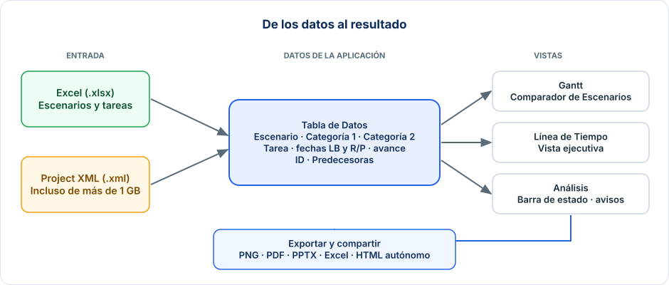
Figura 01 — De los datos al resultadoLas dos fuentes de entrada, la Tabla de Datos, las vistas y las salidas.
Qué observar
La Tabla de Datos es el centro: todo lo que ve en las vistas sale de ella.
Las vistas no modifican los datos: los cambios visuales de la Línea de Tiempo (colores, textos) son solo de presentación.
Conceptos principales
Estos términos aparecen en toda la aplicación. Encontrará definiciones completas en el glosario.
Escenario
Una versión del cronograma que se quiere comparar (por ejemplo «Plan base» o «P50»). Es el agrupador mayor: la columna Escenario. Si una tarea no la trae, se usa el archivo XML de origen y, en último caso, su Categoría 1.
Categoría 1 y Categoría 2
Los dos niveles con que se agrupan las tareas dentro de un escenario: Categoría 2 es la fase o agrupación dentro de una Categoría 1. Cada una tiene su propio color.
Línea Base (LB) y Real/Proyectado (R/P)
Cada tarea tiene dos juegos de fechas: los planificados originalmente (LB) y los reales o proyectados (R/P).
Hito y evento
Un hito es una tarea sin duración (un rombo). Un evento es un marcador que se dibuja sobre el eje de la Línea de Tiempo.
Dependencia
Una relación entre dos tareas: la predecesora condiciona a la sucesora, con un tipo (FC, CC, FF, CF) y un desfase opcional.
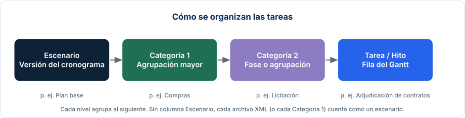
Figura 02 — Cómo se organizan las tareasLa jerarquía con la que OpenGanttLab ordena y colorea las tareas.
Qué observar
Escenario es un agrupador opcional.
Una tarea pertenece a una Categoría 2; esta, a una Categoría 1.
Navegador recomendado
Use Chrome o Edge (versión 86 o superior). Funciones como guardar los cambios directamente en el Excel usan una API propia de estos navegadores.
Software libre
OpenGanttLab se distribuye bajo la licencia GNU GPLv3: puede usarlo, estudiarlo, modificarlo y compartirlo. Las versiones modificadas que se distribuyan deben publicarse también bajo GPLv3, con su código fuente.
Capítulo 2 · Comenzar
Primeros pasos
En cinco minutos: abrir la aplicación, cargar su primer cronograma y recorrer el Gantt, la Línea de Tiempo y la Tabla de Datos.
En este capítulo aprenderás a:
Abrir OpenGanttLab y cargar su primer archivo.
Reconocer el flujo de trabajo completo.
Hacer un primer recorrido por las tres vistas.
Requisitos
Un navegador moderno: Chrome o Edge (versión 86 o superior).
Un archivo de cronograma: un Excel (.xlsx) con las columnas que se describen en Proyectos y datos, o un XML exportado desde Microsoft Project.
No requiere instalación ni conexión a internet. Solo la exportación a PowerPoint necesita internet la primera vez.
Abrir OpenGanttLab
Abra el archivo OpenGanttLab 3.1.html en el navegador. Aparece una pantalla de bienvenida con los datos del autor y la licencia.
Figura 03 — Pantalla de bienvenidaLa primera pantalla al abrir la aplicación.
Qué observar
Pulse «Iniciar» para entrar.
Si abre un archivo compartido que ya trae datos, esta pantalla no aparece.
El flujo de trabajo
Casi todo el trabajo sigue el mismo recorrido de cinco etapas. Puede repetir cualquiera de ellas: al corregir un dato, las vistas se actualizan.
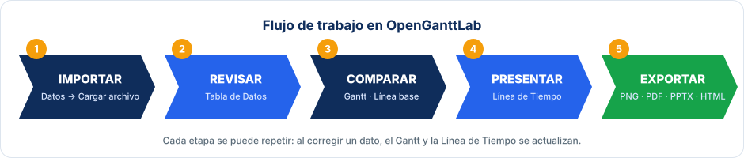
Figura 04 — Flujo de trabajo en OpenGanttLabImportar, revisar, comparar, presentar y exportar.
Cargar su primer proyecto
Vaya a DatosPulse Datos en el riel de navegación (a la izquierda).
Cargue el archivoPulse el ícono Cargar archivo (flecha hacia arriba). La aplicación detecta sola si es un Excel o un XML.
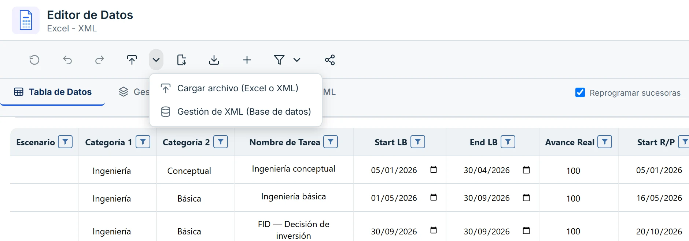
Figura 05 — Menú de carga de la Tabla de DatosLas dos formas de cargar datos desde la barra de la Tabla de Datos.
Qué observar
El ícono de la izquierda carga un archivo directamente.
La flecha (˅) abre «Cargar archivo (Excel o XML)» y «Gestión de XML (Base de datos)».
Elija el archivoSeleccione su .xlsx o su .xml. Las tareas aparecen en la tabla y, de inmediato, en el Gantt.
Revise los datosCompruebe nombres, fechas y avance en la Tabla de Datos. Puede corregir directamente en ella.
Abra el GanttPulse Comparador de Escenarios para ver el cronograma.
Atajo
Con el Gantt vacío, un clic sobre el área de trabajo abre un menú para vincular su Excel o importar un XML.
¿XML de Project?
Un XML necesita un paso más: el mapeo de columnas, donde se indica de qué campo del XML sale cada dato. Casi todo se mapea solo. Vea Importar desde Project XML.
Primer recorrido
GanttActive Línea base para ver las barras rayadas junto a las de color, y Avance real para el relleno de avance. Detalles en Cronograma.
DependenciasEn Capas active Dependencias y haga clic en una barra para resaltar su cadena.
Línea de TiempoPulse Línea de Tiempo en el riel. Pruebe Vista C1, Ejecutivo y Vista Hitos. Detalles en Vistas.
ExporteUse Exportar (PNG, PDF o PPTX) o Compartir para guardar un HTML autónomo. Detalles en Exportar y compartir.
Resultado esperado
Al terminar debería ver su cronograma en el Gantt, con los colores de cada Categoría 1 y Categoría 2, y poder pasar a la Línea de Tiempo sin volver a cargar nada.
Capítulo 3 · Comenzar
La interfaz
Un recorrido por la pantalla: riel de navegación, barra de herramientas, área de trabajo y barra de estado.
En este capítulo aprenderás a:
Identificar cada zona de la pantalla y para qué sirve.
Usar el riel de navegación y la barra de herramientas.
Controlar la escala, el zoom y el formato de fecha.
La pantalla principal
La pantalla se compone de un riel de navegación a la izquierda y, a su derecha, el espacio de trabajo de la sección elegida. En el Gantt el espacio de trabajo se divide en cinco zonas.
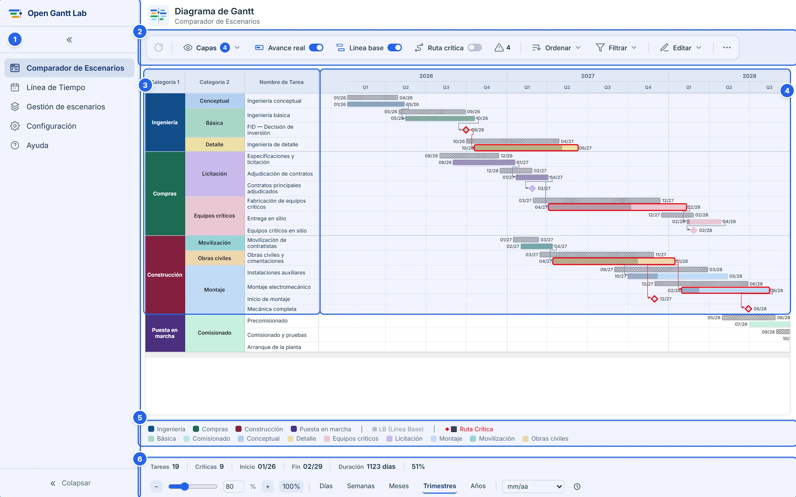
Figura 06 — Pantalla principal (Comparador de Escenarios)Las zonas del Gantt. Los números corresponden a la lista de abajo.
Riel de navegación
Barra de herramientas
Columnas de la tabla (Categoría 1, Categoría 2, Nombre de Tarea)
Área del cronograma: barras, hitos y dependencias
Leyenda de colores
Barra de estado y escala
Riel de navegación
El riel tiene cinco secciones. Cada una abre su propio espacio con su propia barra de herramientas.
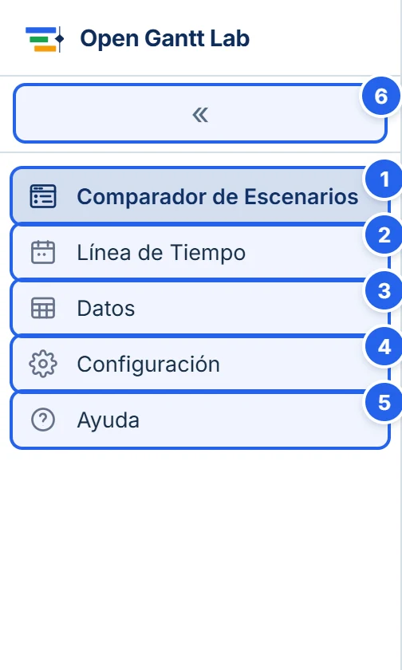
Figura 07 — Riel de navegaciónEl riel en su versión expandida. Al colapsarlo queda solo con íconos.
Comparador de Escenarios (Gantt)
Línea de Tiempo
Datos
Configuración
Ayuda
Botón para colapsar el riel
Sección
Para qué sirve
Comparador de Escenarios
El diagrama de Gantt: Línea Base frente a Real/Proyectado, por escenario.
Línea de Tiempo
La vista ejecutiva para presentar, con edición libre.
Datos
La Tabla de Datos, la carga de archivos y la Gestión de XML.
Configuración
Tema, recordatorios y valores por defecto.
Ayuda
Documentación, historial de cambios y enlace a este manual.
Más espacio
Pulse el botón « Colapsar para reducir el riel a íconos. La aplicación recuerda su elección.
Barra de herramientas
Cada sección tiene su barra. Hay dos tipos de controles: interruptores (se activan con un clic) y menús (íconos con una flecha ˅ que abren opciones). Pase el cursor sobre cualquier ícono para ver su nombre.
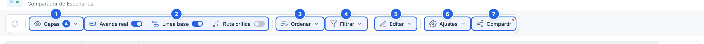
Figura 08 — Barra de herramientas del GanttLa barra del Gantt con la ventana ancha. En ventanas más estrechas, los últimos controles pasan al menú «⋯ Más herramientas».
Capas: qué elementos se dibujan
Accesos rápidos: Avance real, Línea base y Ruta crítica
Ordenar: orden de las tareas
Filtrar: filtros y selección de tareas
Editar: texto libre, mover en bloque y reordenar
Ajustes: fuente y tamaños
Compartir: guardar un HTML autónomo
Barra que se adapta
La barra ajusta lo que muestra al ancho de la ventana: primero oculta las etiquetas, luego los accesos rápidos, y agrupa el resto en el menú Más herramientas (⋯). Ninguna función desaparece.
El menú Capas
Las capas deciden qué se dibuja sobre el cronograma. El número junto a «Capas» indica cuántas están activas.
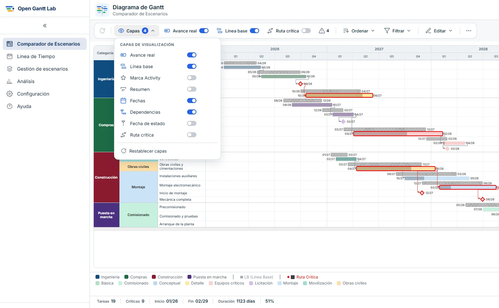
Figura 09 — Menú Capas del GanttTodas las capas disponibles en el Gantt.
Qué observar
Cada capa es un interruptor.
«Fecha de estado» tiene opciones propias (estilo, grosor y color) y «Ruta crítica» permite ajustar el grosor del borde.
«Restablecer capas» vuelve a la configuración inicial.
Capa
Qué hace
Avance real
Rellena cada barra según su porcentaje de avance.
Línea base
Dibuja la barra de Línea Base junto a la Real/Proyectada.
Marca Activity
Muestra solo las tareas marcadas como «Activity».
Resumen
Incluye las tareas resumen (viene apagado).
Fechas
Escribe las fechas junto a las barras y a los hitos.
Dependencias
Dibuja las flechas entre predecesoras y sucesoras.
Fecha de estado
Dibuja una línea vertical en la fecha de corte.
Ruta crítica
Deja visibles solo las tareas marcadas como críticas en los datos. Estas se dibujan siempre con borde rojo; la capa permite ajustar su grosor.
Barra de estado y escala
En la parte inferior hay dos bloques: un resumen del proyecto visible y los controles de escala.
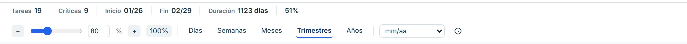
Figura 10 — Barra de estadoResumen del proyecto y controles de zoom, escala y formato de fecha.
Qué observar
Tareas, Críticas, Inicio, Fin y Duración del conjunto visible; a la derecha, el avance promedio.
Deslizador y botones − / + para el zoom; «100 %» vuelve al tamaño normal.
Escala: Días, Semanas, Meses, Trimestres o Años.
Formato de fecha (por ejemplo mm/aa) y botón de reloj para ir a la fecha de hoy.
El resumen sigue a los filtros
Las cifras de la barra de estado se calculan sobre las tareas que están visibles. Si filtra o desactiva escenarios, cambian.
Ayuda integrada
La sección Ayuda del riel abre la documentación dentro de la aplicación. Incluye un manual resumido, una referencia técnica, el historial de cambios y un enlace a este manual completo.
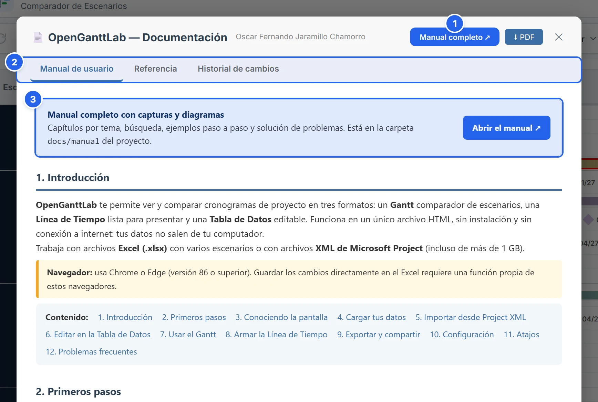
Figura 11 — Sección AyudaLa documentación integrada en la aplicación.
Botón «Manual completo»: abre este manual
Pestañas: Manual de usuario, Referencia e Historial de cambios
Aviso con el enlace al manual completo
Configuración
La sección Configuración guarda preferencias de este navegador (no viajan con «Compartir»).
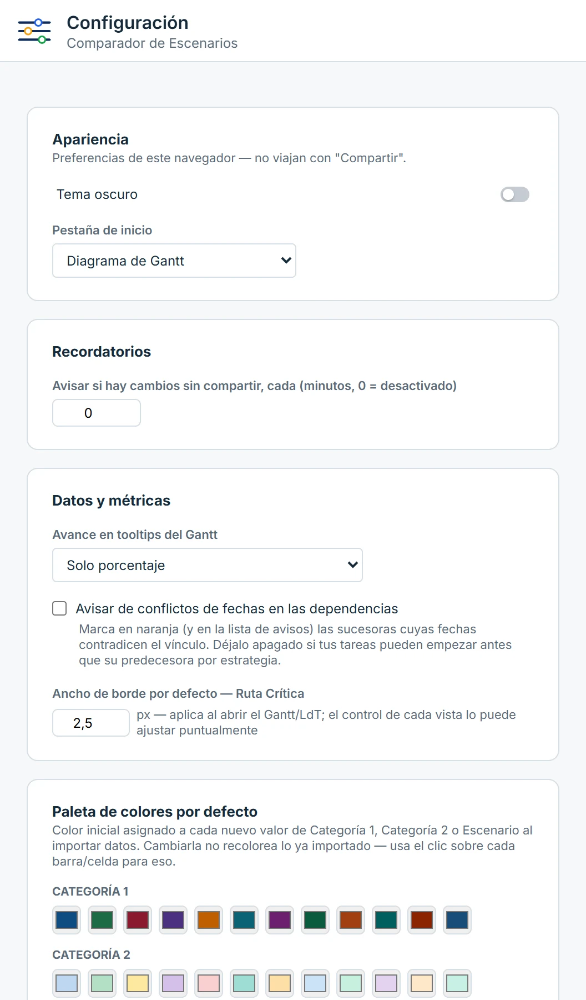
Figura 12 — Sección ConfiguraciónPreferencias de la aplicación.
Qué observar
Apariencia: tema oscuro y pestaña de inicio.
Recordatorios: aviso de cambios sin compartir.
Datos y métricas: avance en tooltips, conflictos de fechas, borde de la ruta crítica.
Paleta de colores por defecto.
Opción
Qué controla
Tema oscuro
Cambia la apariencia de toda la aplicación.
Pestaña de inicio
Sección con la que se abre: Diagrama de Gantt, Línea de Tiempo o Datos.
Recordatorios
Avisa cada N minutos si hay cambios sin compartir (0 = desactivado).
Avance en tooltips
Muestra solo el porcentaje, o el porcentaje más los días restantes o vencidos.
Grosor por defecto del borde rojo de las tareas críticas.
Paleta de colores
Colores que se asignan por defecto a Categoría 1, Categoría 2 y Escenario.
Editor de Datos
Qué columnas se ven en la Tabla de Datos.
Capítulo 4 · Datos
Proyectos y datos
Cómo entran los datos a OpenGanttLab —Excel o Project XML—, cómo se revisan y se corrigen en la Tabla de Datos y cómo se ordenan por escenarios.
En este capítulo aprenderás a:
Preparar un Excel con las columnas correctas y cargarlo.
Importar un XML de Microsoft Project y mapear sus campos.
Editar, filtrar y guardar datos en la Tabla de Datos.
Escribir dependencias en el formato de Project.
Cargar un Excel
El archivo debe ser un .xlsx (el formato antiguo .xls no se puede leer; guárdelo antes como .xlsx). Debe tener una hoja con estas columnas. La primera fila que contenga «Nombre de Tarea» (dentro de las ocho primeras) se toma como encabezado.
Columna
Qué contiene
Obligatoria
id
Campo ID: identificador de la tarea (se usa para las dependencias). El encabezado de la columna es «id» (no distingue mayúsculas).
No
Escenario
La versión del cronograma (agrupador mayor). Si su Excel usa la Categoría 1 para las versiones (P10, P50, P90), deje esta columna vacía: cada Categoría 1 cuenta como un escenario.
No
Categoría 1
Agrupación mayor de las tareas (frente, disciplina o variante).
Sí
Categoría 2
La fase o agrupación de la tarea.
No
Nombre de Tarea
El texto que se ve en el Gantt.
Sí
Start LB · End LB
Inicio y fin de la Línea Base.
Sí
Avance %
De 0 a 100, o de 0,0 a 1,0.
No
Start R/P · End R/P
Inicio y fin Real/Proyectado. Si faltan, se usan los de la Línea Base.
No
Clase
«Tarea», «Hito» o «Evento». Una tarea con inicio y fin de LB iguales se toma como hito.
No
Ruta Crítica
«Si» o «No».
No
Marca Activity · Resumen
«Si» o «No».
No
Predecesoras · Sucesoras
Dependencias en el formato de Project (ver más abajo).
No
Filas que se omiten
Una fila se omite si le falta el Nombre de Tarea, la Categoría 1 o alguna fecha de Línea Base. Si faltan tareas después de cargar, revise primero esas tres columnas.
Puede partir de una plantilla vacía con el ícono Descargar plantilla de la barra de la Tabla de Datos.
Excel vinculado
Cuando el navegador lo permite (Chrome o Edge), el Excel queda vinculado. Aparecen entonces dos botones nuevos: Actualizar, que recarga el archivo con los últimos cambios guardados en Excel, y Guardar cambios en el Excel vinculado, que escribe la tabla en el mismo archivo.
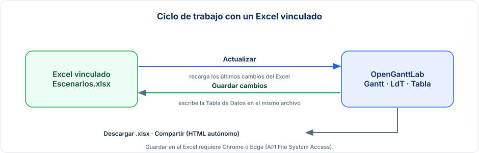
Figura 13 — Ciclo de trabajo con un Excel vinculadoActualizar trae datos del Excel; Guardar cambios los devuelve. Descargar y Compartir generan archivos nuevos.
Autoguardado
Si hay un Excel vinculado (o un archivo elegido con «Compartir») y ya concedió permiso de escritura, la aplicación guarda los cambios sola cada 5 minutos. Sin destino vinculado no guarda nada: el aviso de «cambios sin compartir» es la única señal.
Importar desde Project XML
El XML de Project se gestiona en Datos → Gestión de XML (la tercera pestaña de la sección). Tiene cuatro pestañas: Cargar XML, Base de datos, Mapeo de columnas y Vista previa.
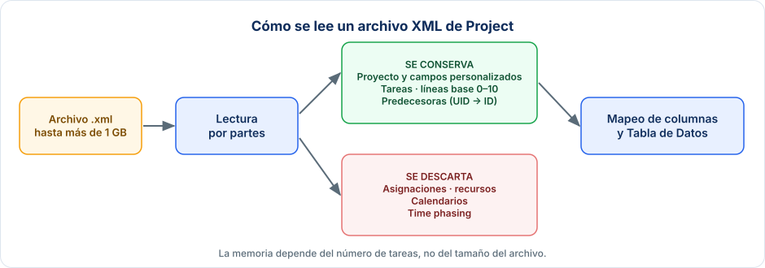
Figura 14 — Cómo se lee un archivo XML de ProjectQué se conserva y qué se descarta al leer el XML.
Qué observar
La lectura es por partes, así que un archivo muy grande no se carga entero en memoria.
Se conservan las predecesoras, convertidas del UID al ID de Project.
Cargue uno o varios XMLEn la pestaña Cargar XML arrastre los archivos o haga clic para elegirlos. Una barra muestra el avance de lectura.
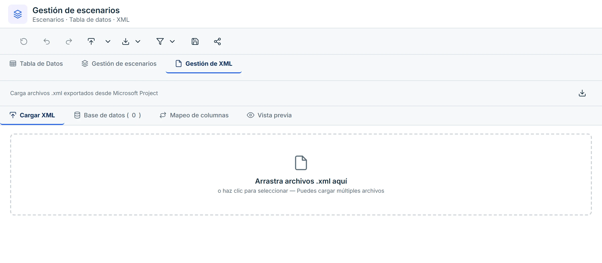
Figura 15 — Cargar XMLLa zona de carga de la Gestión de XML.
Qué observar
Se pueden cargar varios archivos a la vez.
Una barra de avance indica el porcentaje leído.
Revise la base de datosLa pestaña Base de datos lista cada archivo cargado con su nombre de variante (editable), su cantidad de tareas y su «LB actual».
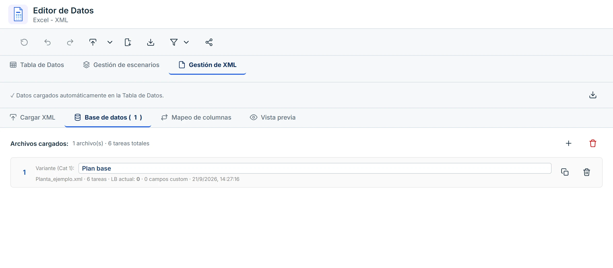
Figura 16 — Base de datos de XML cargadosCada archivo cargado es una fila de la base de datos.
Qué observar
El nombre de la variante es editable: es el nombre del escenario.
«LB actual: N» indica cuál de las 11 líneas base de Project se usa.
Los íconos de la derecha duplican o eliminan la carga.
Configure el mapeoEn Mapeo de columnas indique de qué campo del XML sale cada dato de la tabla. La mayoría se mapea automáticamente.
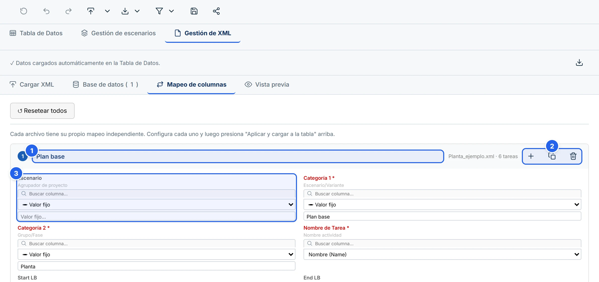
Figura 17 — Mapeo de columnasCada archivo tiene su propio mapeo independiente.
Nombre de la carga (variante o escenario)
Herramientas: agregar mapeo personalizado, duplicar y eliminar
Un campo de mapeo: buscador, lista de columnas y valor fijo
Compruebe con la vista previaLa pestaña Vista previa muestra las primeras tareas con el mapeo aplicado.
Cómo funciona el mapeo
Para cada campo de la tabla puede elegir:
Opción
Efecto
Una columna del XML
Toma el valor de esa columna en cada tarea (incluye los campos personalizados del proyecto).
★ Variante del archivo
Usa el nombre de la carga como valor.
✏ Valor fijo
Escribe un texto que se aplica a todas las tareas del archivo.
— No mapear —
Deja el campo vacío.
Los campos Categoría 1, Categoría 2 y Nombre de Tarea son obligatorios. Cuando están completos, los datos pasan solos a la Tabla de Datos; no hay botón de aplicar.
Si Escenario está en «Valor fijo», la carga se renombra con ese valor y viceversa.
Copiar al [n] copia el mapeo al siguiente archivo.
El botón + crea un mapeo personalizado: una columna extra con nombre editable que aparece en la tabla y en el Gantt. Dura solo la sesión.
Líneas base 0–10
Project guarda hasta 11 líneas base. OpenGanttLab guarda el inicio y el fin de todas y usa por defecto la de fecha de guardado más reciente (la «LB actual»). El mapeo automático de Start LB y End LB usa esa línea.
Las columnas personalizadas no viajan
Los mapeos personalizados existen solo durante la sesión: no se guardan con Compartir ni se exportan a Excel.
Devolver los cambios a Project (XML)
Los cambios que haga en la Tabla de Datos se pueden llevar de vuelta a Microsoft Project. OpenGanttLab no reemplaza el archivo: vuelve a leer el XML original por partes y crea un XML nuevo en el que solo cambian las tareas que usted editó. El resto del archivo pasa sin alteraciones y funciona también con archivos de más de 1 GB.
Edite en la Tabla de DatosCambie nombres, avance, fechas, predecesoras o campos personalizados de las tareas del XML.
Pulse «Guardar cambios en un XML de Project»Está en Datos → Gestión de XML → Base de datos, en la fila del archivo (ícono de documento con flecha).
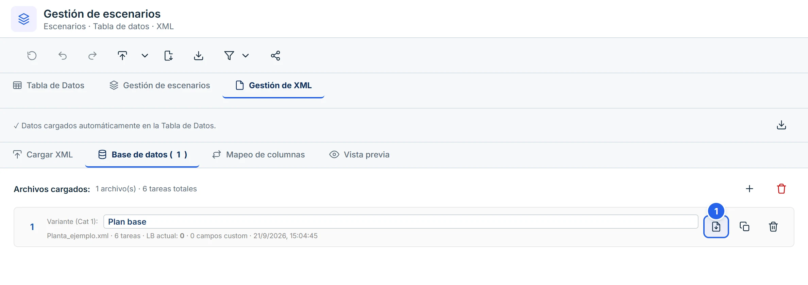
Figura 18 — Botón para guardar los cambios en un XMLCada archivo cargado tiene su propio botón.
Guardar cambios en un XML de Project (junto a Duplicar y Eliminar)
Elija el XML original y el destinoLea el aviso y pulse Continuar. Elija el XML original del proyecto y luego dónde guardar el nuevo (propone «…_editado.xml»).
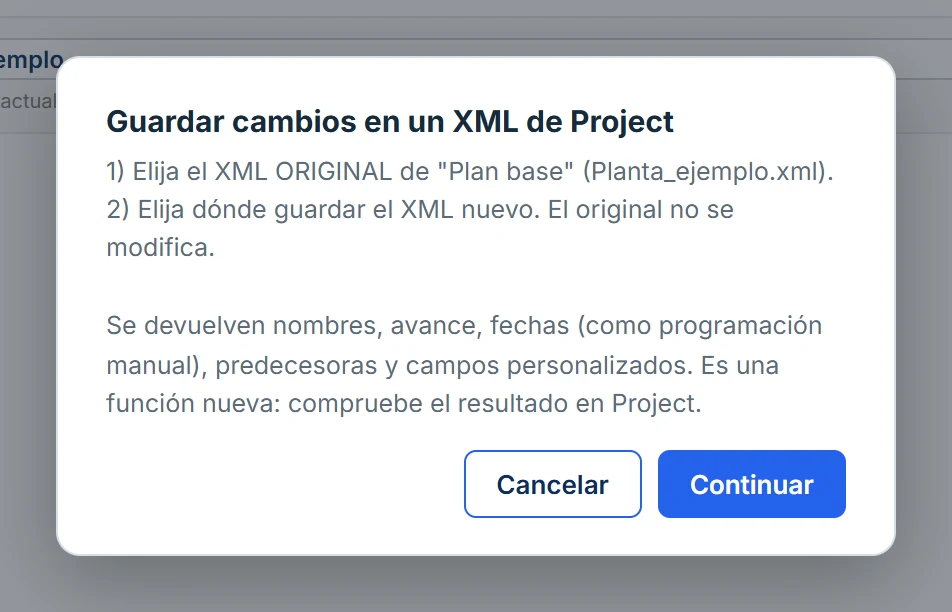
Figura 19 — Aviso previoCuadro que aparece antes de elegir los archivos.
Qué observar
Indica qué archivo debe elegir y que el original no se modifica.
Resume lo que se devuelve.
Revise el resumen y abra el resultado en ProjectLa aplicación indica cuántas tareas se modificaron y qué no se pudo devolver.
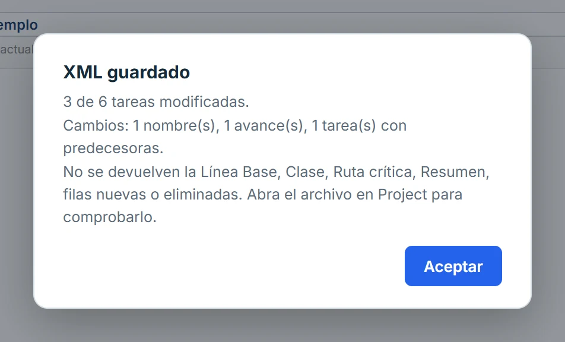
Figura 20 — Resumen del guardadoEjemplo con un nombre, un avance y unas predecesoras modificados.
Qué observar
Cuántas tareas se modificaron de las del archivo.
Qué tipo de cambios se escribieron.
Lo que no se devuelve.
Qué se devuelve y qué no
Cambio en la tabla
Qué se escribe en el XML
Nombre de Tarea
El nombre de la tarea.
Avance
El porcentaje completado.
Start R/P y End R/P
Las fechas de inicio y fin; la tarea pasa a programación manual (ver más abajo).
Predecesoras
Los vínculos con su tipo y desfase en días; el ID se convierte al UID de Project.
Campos personalizados
El valor del campo. Las Categorías 1 y 2 solo si vienen de un campo personalizado del proyecto.
No se devuelve: la Línea Base, Clase, Ruta crítica y Resumen (incluidas las fechas de las tareas resumen), las filas nuevas o eliminadas en la tabla, los desfases en porcentaje y los escenarios creados con «Duplicar escenario».
Fechas: programación manual y duración aproximada
Project recalcula las fechas de las tareas con programación automática, por lo que OpenGanttLab marca como manual cada tarea cuyas fechas cambió. La duración se conserva si el largo de la tarea no cambia; si cambia, se ajusta de forma proporcional (aproximada), porque la aplicación cuenta días corridos y Project usa calendarios laborales. Si una tarea no trae los elementos de programación manual, sus fechas no se devuelven y el resumen lo indica.
Compruebe el resultado en Project
La aplicación verifica que cada tarea modificada siga siendo XML válido y que solo cambien las tareas editadas, pero aún no se ha comprobado abriendo el resultado en Microsoft Project. Ábralo y revíselo antes de usarlo. No cambie el mapeo entre editar y guardar.
Requisitos
Necesita Chrome o Edge (API de acceso a archivos). El XML original debe estar en UTF-8; el de destino es un archivo nuevo, y el original no se modifica.
La Tabla de Datos
La tabla contiene todas las tareas y es el lugar para corregir datos. Los cambios se aplican solos.
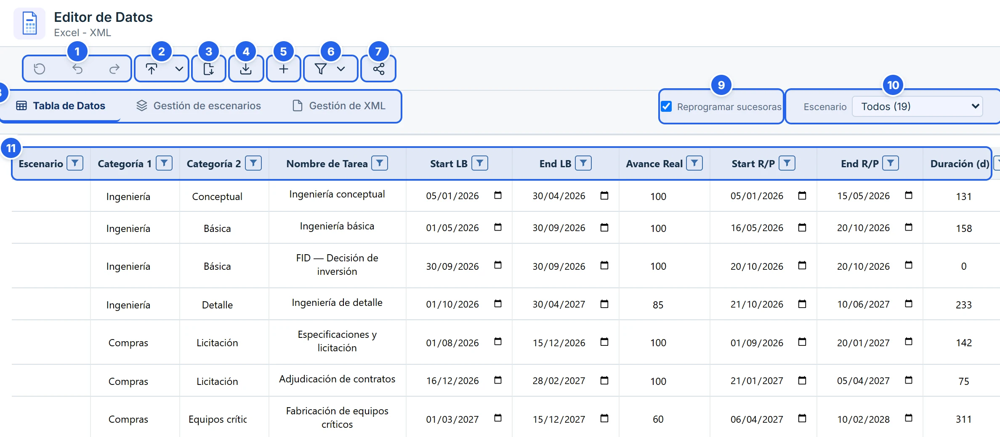
Figura 21 — Tabla de DatosLa barra y las columnas de la Tabla de Datos.
Restaurar datos originales del XML, Deshacer y Rehacer
Cargar archivo y más opciones de carga
Descargar plantilla
Descargar .xlsx
Agregar fila
Filtro por columna
Compartir
Pestañas: Tabla de Datos, Gestión de escenarios y Gestión de XML
Reprogramar sucesoras (interruptor)
Segmentador de escenario
Encabezados con botón de filtro
Qué observar
Con un Excel vinculado aparecen además «Actualizar» y «Guardar cambios».
La columna «Duración (d)» está a la derecha de End R/P.
Editar: haga clic en una celda y escriba. El Gantt y la Línea de Tiempo se actualizan al salir de la tabla, no en cada tecla.
Agregar o eliminar filas:Agregar fila al final; el ícono de papelera al final de cada fila la elimina.
Deshacer, rehacer y restaurar:Restaurar vuelve a los datos originales del XML y descarta los cambios manuales (se puede deshacer).
Ancho de columna: arrastre el borde derecho del encabezado.
Tablas grandes: desde 250 filas solo se dibujan las visibles, así que sigue fluida con miles de tareas.
Duración y reprogramación de sucesoras
La columna Duración (d) muestra los días corridos de cada tarea (fin − inicio + 1; los hitos y eventos valen 0). Al editar una fila, la tabla puede reprogramar sus sucesoras como lo hace Project con programación automática.
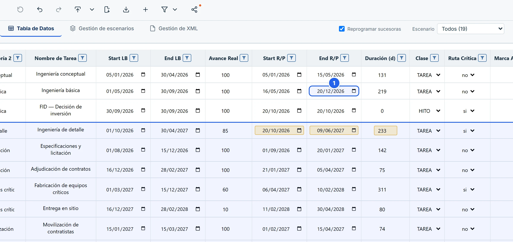
Figura 22 — Reprogramación de sucesorasAl ampliar «Ingeniería básica», sus sucesoras se desplazan.
Celda editada (End R/P)
Qué observar
Las celdas con fondo amarillo son las fechas que cambiaron automáticamente.
Las filas con fondo azul claro son las sucesoras reprogramadas.
La Línea Base no cambia.
Qué dispara la reprogramación: cambiar Start R/P, End R/P, Duración o Predecesoras de una fila.
Qué se mueve: las sucesoras de esa fila, dentro de su escenario, lo antes posible según sus vínculos (FC, CC, FF, CF y desfase). Se empujan y también se adelantan.
Mover el Start R/P conserva la duración (corre también el End R/P); editar el End R/P o la Duración la cambia.
Lo que no se mueve: las tareas con avance 100 %, las tareas resumen y la Línea Base. Las de 100 % y las resumen siguen valiendo como predecesoras.
Deshacer: la edición y todo lo reprogramado son un solo paso de historial.
Ciclos: si hay un ciclo de dependencias no se reprograma nada y aparece un aviso.
Días corridos
La reprogramación usa días corridos, sin calendario laboral. Puede apagarla con el interruptor Reprogramar sucesoras de la barra (viene encendido y la aplicación recuerda su elección en este navegador).
Dependencias: ID, Predecesoras y Sucesoras
Las tres últimas columnas de la tabla sirven para las dependencias. ID identifica la tarea, Predecesoras se escribe a mano o viene del XML, y Sucesoras se calcula sola (es la inversa de las predecesoras).
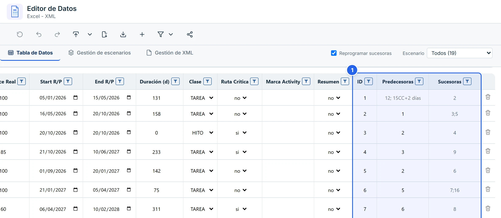
Figura 23 — Columnas de dependenciasLas columnas ID, Predecesoras y Sucesoras.
ID, Predecesoras (editable) y Sucesoras (calculada)
La columna Predecesoras usa el mismo formato que Microsoft Project: el número de la predecesora, el tipo de vínculo y un desfase opcional.
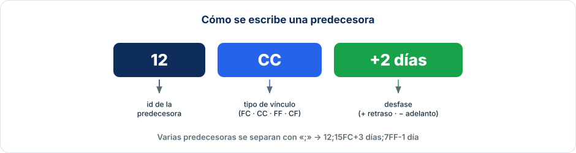
Figura 24 — Cómo se escribe una predecesoraAnatomía de una predecesora.
Qué observar
Se aceptan las siglas en español (FC, CC, FF, CF) y en inglés (FS, SS, FF, SF).
El desfase admite días, semanas, horas y minutos (por ejemplo +2 días, -1d, +3w).
Sin tipo ni desfase, el vínculo es Fin a Comienzo.
Ejemplo
Significado
12
La tarea 12 debe terminar antes de que empiece esta (Fin a Comienzo).
12CC+2 días
Comienzo a Comienzo con 2 días de retraso.
7FF-1 día
Fin a Fin con 1 día de adelanto.
12;15FC+3d
Dos predecesoras, separadas por «;».
Ámbito de los ID
El ID solo tiene que ser único dentro de su Escenario. Si Escenario está vacío se usa un nombre generado: la variante del archivo XML o, en Excel, la Categoría 1. En un XML los ID se buscan en todo el archivo; en Excel, un ID único en todo el archivo también puede enlazar entre escenarios.
Filtrar la tabla
El ícono Filtro muestra u oculta los botones de embudo de cada encabezado. Los filtros de cada columna se explican en Filtros y orden. Además, el segmentador de escenario (a la derecha de la barra) muestra en la tabla solo las filas del escenario elegido; «Todos (N)» las muestra todas.
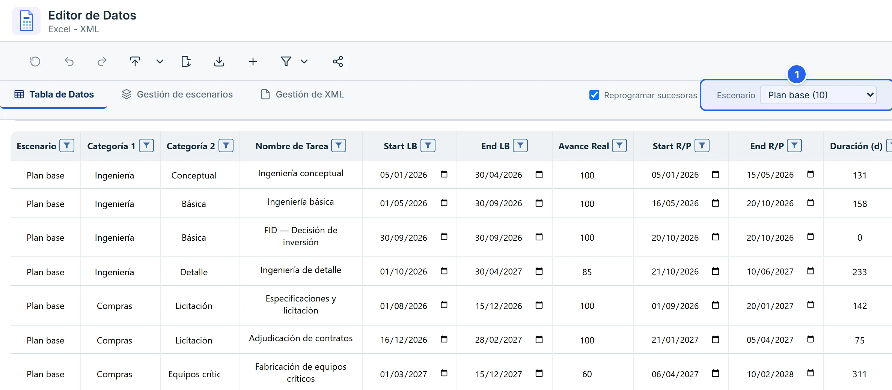
Figura 25 — Segmentador de escenarioLa Tabla de Datos filtrada por escenario.
Segmentador: muestra solo las filas del escenario elegido (aquí «Plan base», con 10 actividades)
Capítulo 5 · Visualizar
Cronograma: el Gantt
El Comparador de Escenarios: barras de Línea Base y Real/Proyectado, avance, ruta crítica, dependencias y todas las herramientas de lectura del diagrama.
En este capítulo aprenderás a:
Leer el Gantt: barras, hitos, avance y Línea Base.
Activar y entender las dependencias y sus tipos.
Resaltar la cadena de una tarea y revisar los avisos.
Mostrar columnas adicionales y usar los tooltips.
Cómo leer el Gantt
Cada fila es una tarea o un hito, agrupada por Categoría 1 y Categoría 2. A la derecha, el eje de tiempo muestra las barras.
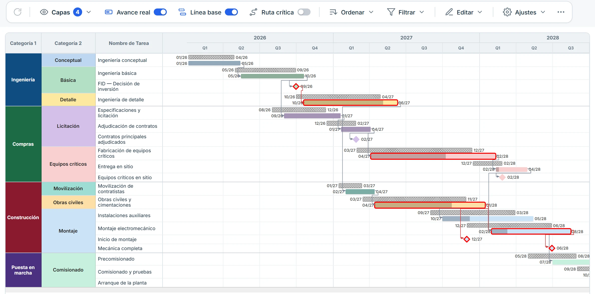
Figura 26 — Gantt con Línea Base, avance y dependenciasCronograma de ejemplo (proyecto inventado) con las capas Línea base, Avance real y Dependencias activas. Las tareas críticas se ven con borde rojo.
Qué observar
La barra rayada gris es la Línea Base; la barra de color es lo Real/Proyectado, y su parte más oscura es el avance.
Los rombos son hitos. Con borde rojo, están en la ruta crítica.
Las flechas unen predecesoras y sucesoras.
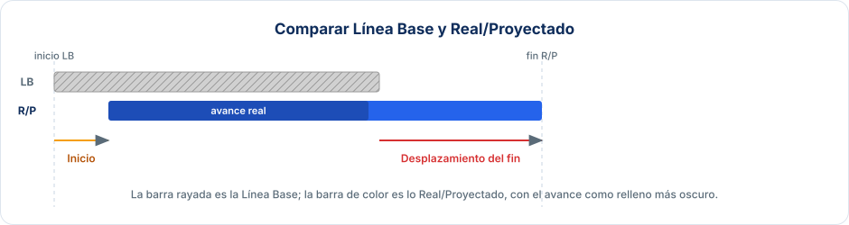
Figura 27 — Línea Base frente a Real/ProyectadoCómo se interpreta el desplazamiento entre lo planificado y lo real o proyectado.
Un vistazo rápido
Si la barra de color empieza o termina después de la rayada, la tarea se desplazó respecto al plan. La diferencia es el desplazamiento.
Detalle al pasar el cursor
Al pasar el cursor sobre una barra o un hito aparece un cuadro con su nombre con el ID (si tiene), sus fechas, avance, si es crítica y —si tiene— sus predecesoras y sucesoras, cada una con su ID, tipo de vínculo y desfase. Lo mismo aparece en la Línea de Tiempo.
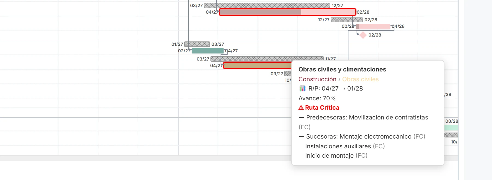
Figura 28 — Tooltip de una tareaEl detalle de una tarea sin abrir ningún panel.
Qué observar
Fechas de la Línea Base y Real/Proyectado.
Avance (y días restantes si lo activó en Configuración).
Predecesoras y sucesoras con su ID y tipo de vínculo.
Dependencias
Una dependencia relaciona dos tareas: la predecesora condiciona a la sucesora. OpenGanttLab admite los cuatro tipos de Project.
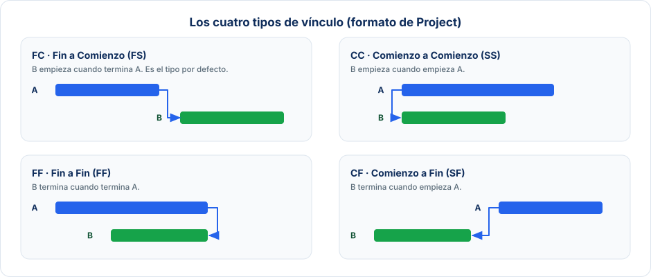
Figura 29 — Los cuatro tipos de vínculoFC, CC, FF y CF entre una tarea A (predecesora) y una tarea B (sucesora).
Tipo
Sigla en inglés
Significado
FC · Fin a Comienzo
FS
B empieza cuando termina A. Es el tipo por defecto.
CC · Comienzo a Comienzo
SS
B empieza cuando empieza A.
FF · Fin a Fin
FF
B termina cuando termina A.
CF · Comienzo a Fin
SF
B termina cuando empieza A.
Ver las flechas
Abra CapasPulse Capas en la barra de herramientas.
Active DependenciasLas flechas se dibujan entre las tareas visibles. Gris = normal; rojo = entre dos tareas de la ruta crítica.
Resalte una cadenaHaga clic en una barra o en un hito: se marcan en azul todas sus predecesoras y sucesoras (directas e indirectas) y el resto se atenúa.
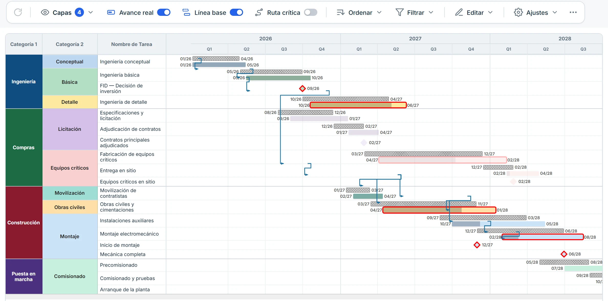
Figura 30 — Cadena de dependencias de una tareaResaltado de la cadena completa de una tarea.
Qué observar
La tarea seleccionada («Obras civiles y cimentaciones») y su cadena en azul.
El resto de barras queda atenuado.
Un clic en un espacio en blanco, o de nuevo en la barra, quita el resaltado.
Solo con el interruptor encendido
El resaltado de cadena funciona con Dependencias activo. Cambiar el interruptor reinicia la selección.
Avisos de dependencias
Cuando hay algo que revisar aparece un ícono de triángulo junto a las capas, con el número de avisos.
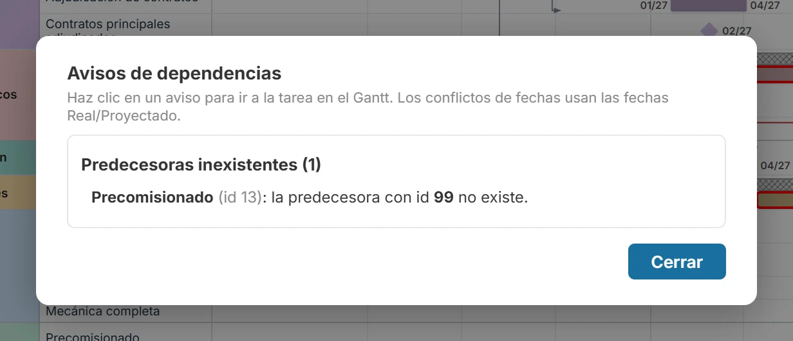
Figura 31 — Avisos de dependenciasEjemplo: la tarea «Precomisionado» apunta a una predecesora con id 99 que no existe.
Qué observar
Cada aviso indica la tarea afectada y el problema.
Un clic en un aviso lleva a la tarea en el Gantt (y activa Dependencias si estaba apagado).
Aviso
Causa
Predecesoras inexistentes
Una predecesora apunta a un ID que no existe en su escenario.
Ciclos
Dos o más tareas dependen entre sí (A depende de B y B de A).
Autorreferencias
Una tarea se lista a sí misma como predecesora.
Formato no reconocido
Parte del texto de la columna Predecesoras no tiene el formato de Project.
Conflictos de fechas opcional
Las fechas de la sucesora contradicen el vínculo (ver abajo).
Conflictos de fechas
Un conflicto ocurre cuando la sucesora empieza o termina antes de lo que permite el vínculo. Por ejemplo, con un vínculo FC, B empieza antes de que termine A.
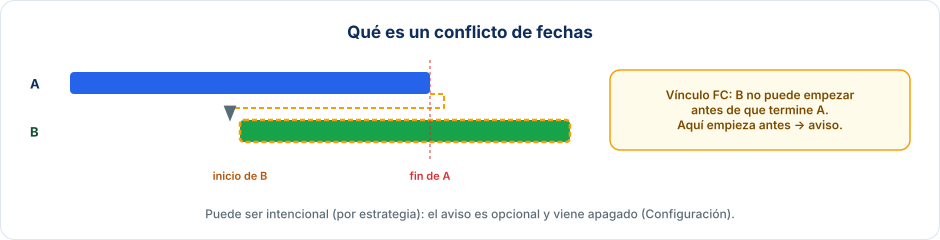
Figura 32 — Qué es un conflicto de fechasB empieza antes de que termine A en un vínculo Fin a Comienzo.
Viene apagado
En la práctica una tarea puede empezar antes que su predecesora por estrategia. Por eso el aviso es opcional: actívelo en Configuración → Datos y métricas → «Avisar de conflictos de fechas». Compara las fechas Real/Proyectado y tolera 1 día.
Mostrar u ocultar columnas
Haga clic derecho sobre un encabezado de columna para abrir el menú Mostrar / Ocultar. Es una sola lista con todas las columnas de la Tabla de Datos.
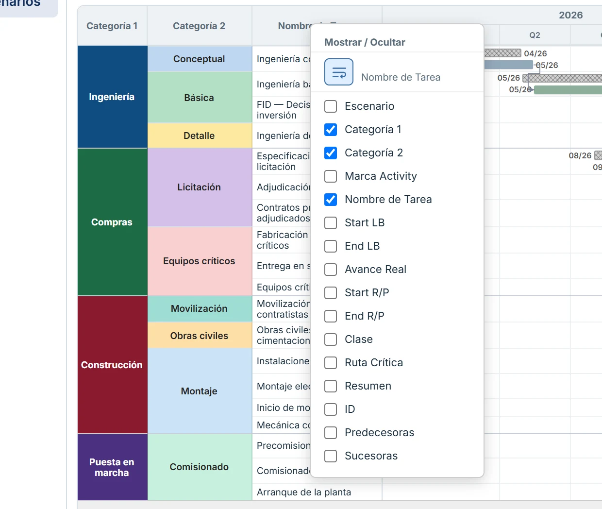
Figura 33 — Menú de columnas del GanttTodas las columnas de la tabla, disponibles desde un clic derecho.
Qué observar
Las columnas de la izquierda se ven por defecto; las demás, ocultas.
Se pueden agregar ID, Predecesoras y Sucesoras junto a cada tarea.
El primer ícono del menú activa «Ajustar texto» para la columna donde se hizo clic.
Las columnas agregadas quedan fijas a la izquierda, a continuación de «Nombre de Tarea», con su propio botón de filtro.
Ajustar texto: activo, el texto se ajusta a 2 líneas; inactivo, se corta con «…». La preferencia se guarda por columna.
La altura de cada fila se ajusta sola al contenido.
Arrastre el borde derecho de un encabezado para cambiar el ancho de la columna.
Colores
Un clic en una celda de Escenario, Categoría 1 o Categoría 2 abre un selector de color. El color de Categoría 2 es el de sus barras. Los colores por defecto se definen en Configuración.
Fecha de estado y hoy
La capa Fecha de estado dibuja una línea vertical en la fecha de corte del proyecto, con estilo, grosor y color configurables. El botón de reloj de la barra inferior lleva la vista a la fecha de hoy.
Capítulo 6 · Visualizar
Vistas: la Línea de Tiempo
La Línea de Tiempo presenta el cronograma para un comité: cuatro modos de vista, edición libre de colores y textos, formas, dependencias y exportación.
En este capítulo aprenderás a:
Elegir el modo de vista adecuado: Comparador, Segmentación, Ejecutivo, Vista C1 o Vista Hitos.
Editar barras, hitos y textos sin alterar los datos.
Insertar textos y formas libres.
Mostrar dependencias en la Línea de Tiempo.
Los modos de vista
En Capas, la sección Contenido decide qué elementos se muestran y la sección Modo de vista decide cómo se dibuja el diagrama. Todos usan los mismos datos. Sin ningún modo activo, la Línea de Tiempo muestra su vista base: una barra por tarea sobre el eje de años, con los hitos sobre el eje.
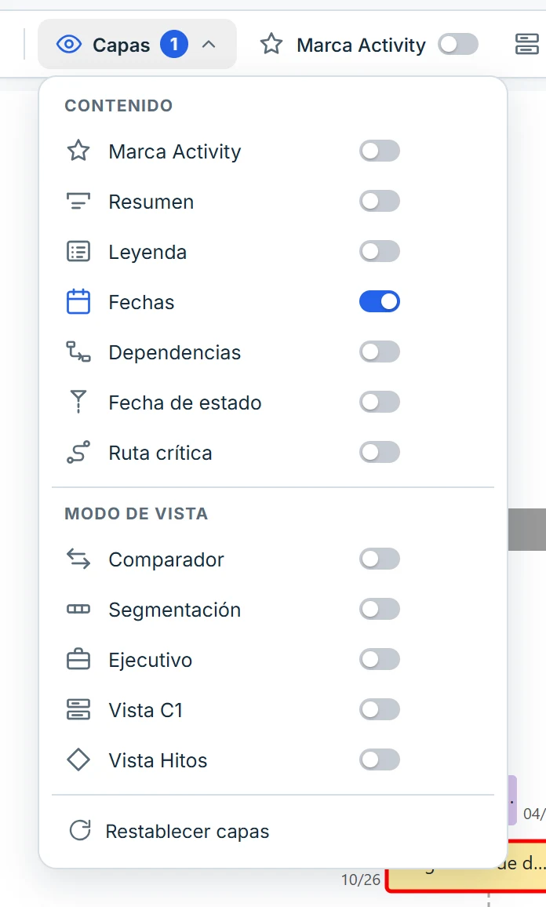
Figura 34 — Menú Capas de la Línea de TiempoContenido y modo de vista.
Qué observar
CONTENIDO: qué elementos se muestran (Marca Activity, Resumen, Leyenda, Fechas, Dependencias, Fecha de estado, Ruta crítica).
MODO DE VISTA: Comparador, Segmentación, Ejecutivo, Vista C1 y Vista Hitos.
Modo de vista
Qué hace
Cuándo usarlo
Comparador
Dos secciones: la Línea Base arriba y lo Real/Proyectado abajo.
Mostrar cuánto se desplazó el plan.
Ejecutivo
Cada tarea es un rombo en su fecha fin, con nombre y fecha debajo.
Láminas de alto nivel, solo con fechas de entrega.
Vista C1
Agrupa las barras en bandas por Categoría 1, con el color de Categoría 2.
Presentar el cronograma por disciplina o frente.
Segmentación
Agrega bajo los años una fila con el subperíodo de la escala (trimestres, meses o semanas). No tiene efecto con la escala Años.
Ubicar las fechas con más precisión.
Vista Hitos
Solo los rombos de hito; oculta las barras.
Un comité que solo quiere ver los hitos.
Comparación visual: vista base y modos
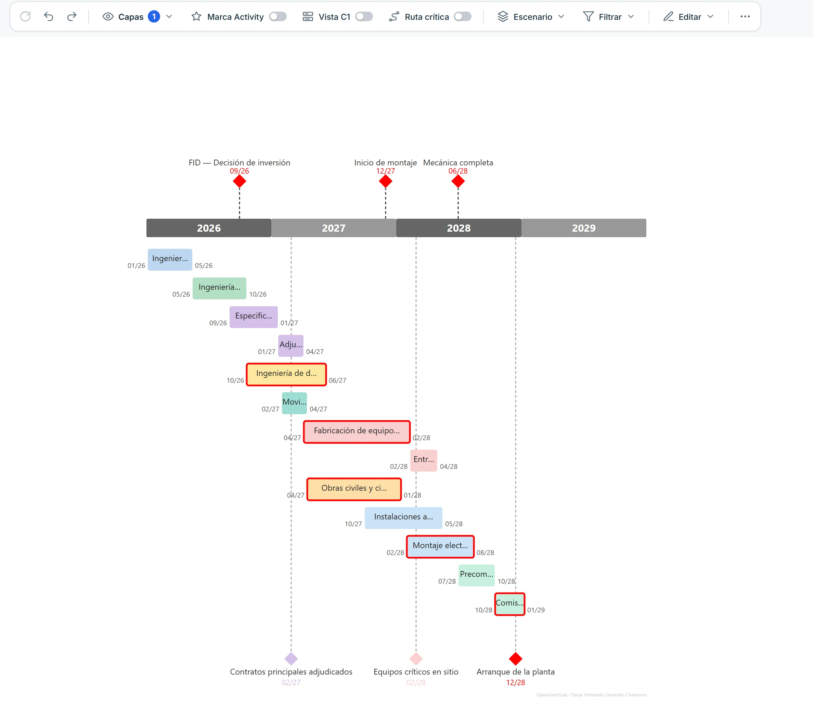
Figura 35 — Vista base (sin modos)El cronograma completo.
Qué observar
Barras con nombre y fechas.
Hitos sobre el eje con línea punteada.
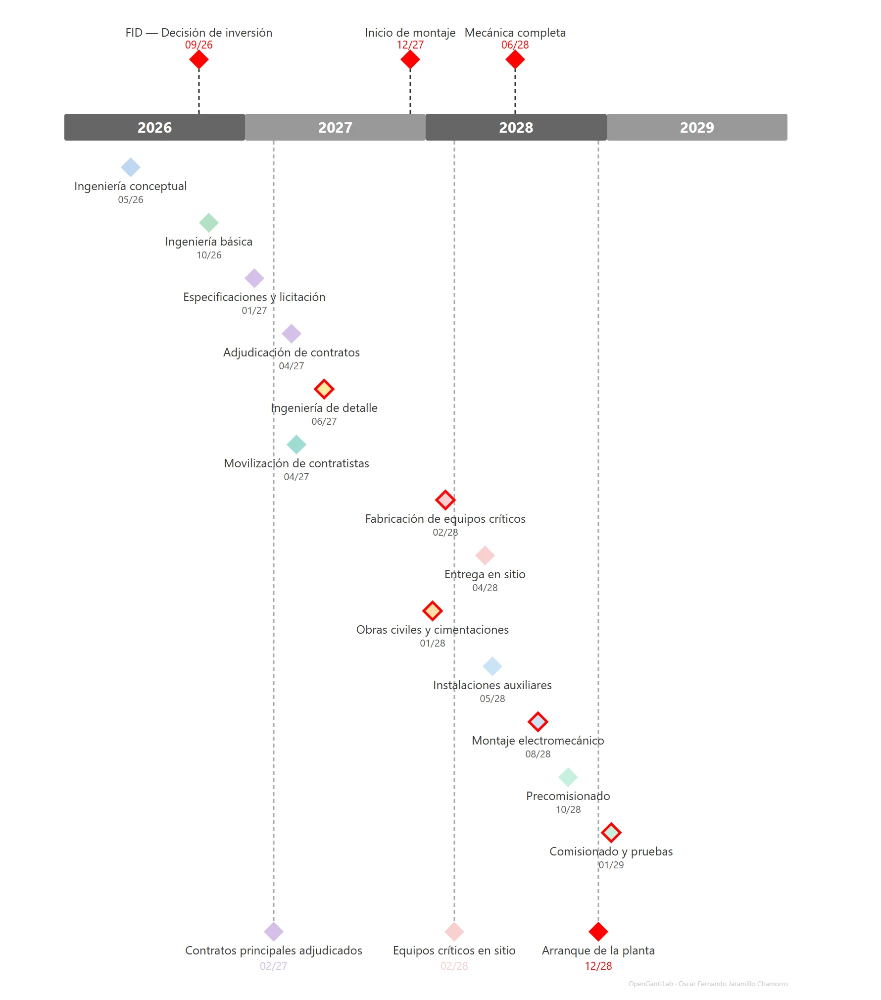
Figura 36 — Modo EjecutivoSolo entregas.
Qué observar
Un rombo por tarea, en su fecha fin.
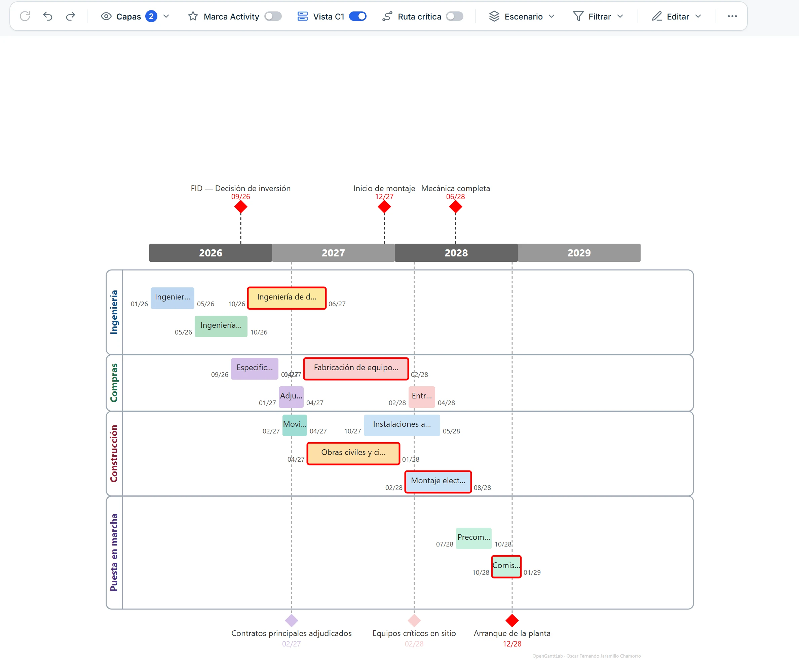
Figura 37 — Vista C1Agrupado por Categoría 1.
Qué observar
Una banda por Categoría 1.
Etiqueta vertical con el nombre.
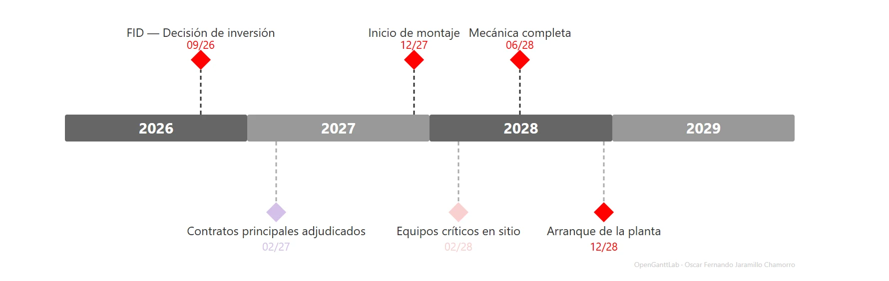
Figura 38 — Vista HitosSolo hitos.
Qué observar
Solo hitos, arriba y abajo del eje.
Comparador
Con Comparador activo la Línea de Tiempo se divide en dos secciones que comparten las mismas filas: arriba la Línea Base, abajo lo Real/Proyectado. Los títulos de cada sección se editan en Escenario (Título Escenario y Título Comparador).
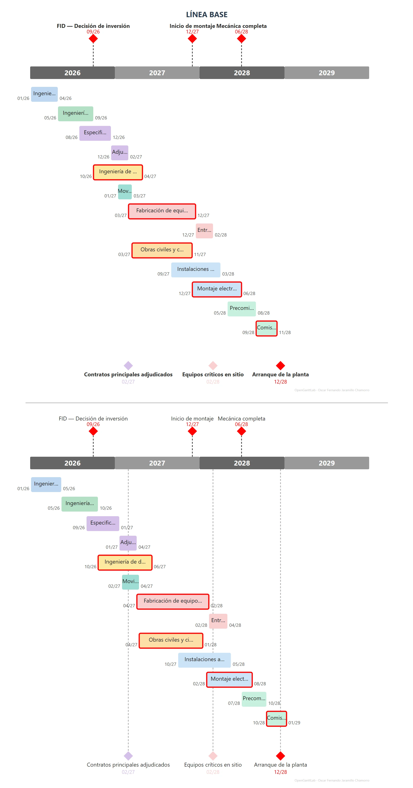
Figura 39 — Línea de Tiempo en modo ComparadorLas dos secciones con el mismo orden de tareas.
Qué observar
Sección superior: fechas de la Línea Base.
Sección inferior: fechas Real/Proyectado.
Compare la posición de una misma barra en ambas secciones.
Interactuar con el diagrama
Acción
Resultado
Un clic en una barra, hito o evento
Lo selecciona (borde punteado azul) y lo deja listo para Delete.
Delete con algo seleccionado
Lo oculta de la Línea de Tiempo. No cambia los datos.
Doble clic
Abre el panel de edición.
Arrastrar
Mueve la barra o el hito.
Ctrl o Shift + clic
Agrega barras a la selección; el doble clic las edita todas a la vez.
Clic en un espacio en blanco
Limpia la selección.
Clic en un año
Cambia el color de fondo y la fuente de ese año.
Ctrl+Z / Ctrl+Y
Deshace y rehace cambios en la Línea de Tiempo.
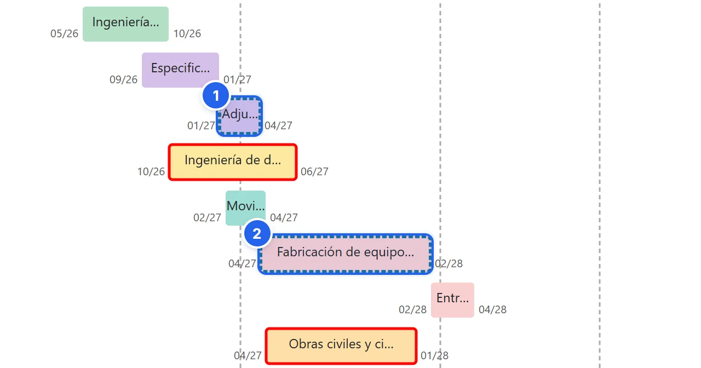
Figura 40 — Selección de barrasLos elementos seleccionados se resaltan; con varios seleccionados, el doble clic edita todos a la vez.
Barra seleccionada con un clic (borde punteado azul)
Segunda barra agregada con Ctrl + clic
El panel de edición
Un doble clic sobre una barra abre su panel de edición.
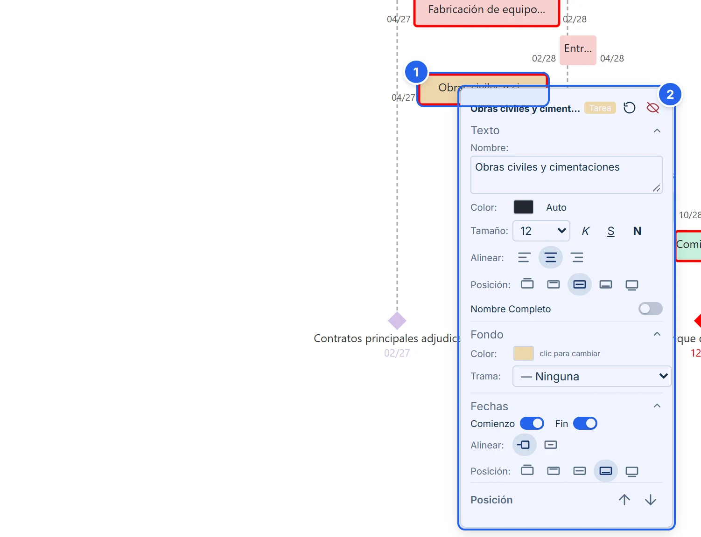
Figura 41 — Panel de edición de una barraTodos los cambios del panel son visuales: nunca modifican la Tabla de Datos.
Barra seleccionada (doble clic)
Panel de edición
Qué observar
Texto: nombre, color, tamaño, negrita, alineación y posición.
Fondo: color de la barra y trama.
Fechas: mostrar comienzo y fin, alinear y posición.
Posición: capa (arriba/abajo).
Lo visual no cambia los datos
Editar el texto o el color en la Línea de Tiempo solo afecta la presentación. El dato real de la tabla, del Gantt, del Excel y del XML no se toca. La única excepción es la sección Dependencias descrita abajo.
Dependencias desde el panel
En tareas, hitos y eventos, el panel incluye la sección Dependencias (expandida por defecto):
ID: el identificador de la tarea (solo lectura).
Predecesoras y Sucesoras: campos editables con el formato de Project, por ejemplo 12; 15CC+2 días. Confirme con Enter o saliendo del campo.
A diferencia del resto del panel, estos cambios sí modifican los datos: se escriben en la columna Predecesoras de la Tabla de Datos (las sucesoras editan las predecesoras de las tareas indicadas) y se pueden deshacer con el deshacer de la tabla. Si la reprogramación automática está activa, las sucesoras se reprograman como al editar la tabla. Un formato no válido o un ID inexistente se avisa y se ignora. Para definir sucesoras, la tarea debe tener ID.
Ocultar una línea de precedencia
Con Dependencias encendido en la Línea de Tiempo, haga clic sobre una flecha: se resalta con un halo azul. Pulse Delete (o Backspace) para ocultarla; el resto de flechas no cambia. Para volver a verla, abra Tareas ocultas (N), sección Líneas de precedencia, y restáurela con el ojo, o use Restaurar todas. Es solo visual: los vínculos siguen en los datos, el Gantt, el Excel y el XML, y el halo de selección no sale en los exportes. Con una barra seleccionada solo se dibuja su cadena azul y las demás flechas no se pueden seleccionar.
Ejecutivo: ocultar tareas
Active EjecutivoEn Capas → Modo de vista.
Oculte una tarea de esta vistaSelecciónela con un clic y pulse Delete, o use doble clic → Ocultar de Ejecutivo.
Recupere lo ocultoAparece el botón Tareas ocultas (N): ábralo para restaurar una tarea o todas.
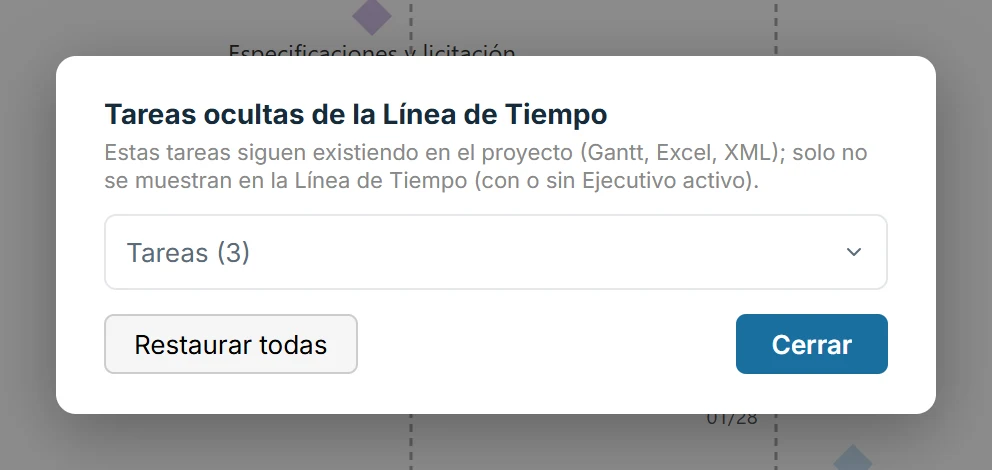
Figura 42 — Tareas ocultas de la Línea de TiempoCuadro que aparece al pulsar «Tareas ocultas (N)». También lista las líneas de precedencia ocultas.
Qué observar
La lista muestra las tareas ocultas (3 en el ejemplo).
«Restaurar todas» las devuelve; también puede restaurarlas una a una.
Las tareas siguen existiendo en el Gantt, el Excel y el XML.
Persistencia
Las tareas ocultas y el formato de fecha se guardan por proyecto en el navegador y también viajan con «Compartir».
Vista C1: bandas por Categoría 1
Cada banda tiene una etiqueta vertical con el nombre de su Categoría 1.
La etiqueta se puede seleccionar y arrastrar hacia arriba o abajo para reordenar las bandas, con una vista previa en vivo.
El borde derecho de la columna de etiquetas y el borde inferior de cada banda se arrastran para ajustar su ancho y alto.
Un doble clic en la etiqueta abre el panel de edición del texto (solo visual).
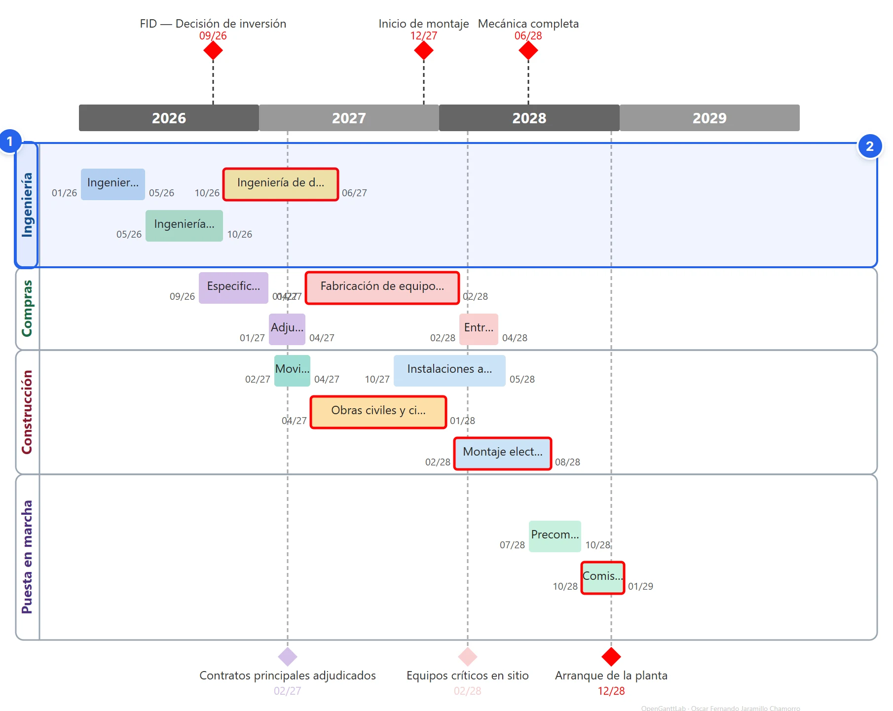
Figura 43 — Bandas de la Vista C1Cada Categoría 1 es una banda con su etiqueta.
Etiqueta vertical de la banda: se selecciona y se arrastra para reordenar
Banda de Categoría 1: su borde inferior se arrastra para ajustar el alto
Edición: textos y formas libres
El menú Editar agrega elementos propios sobre el diagrama.
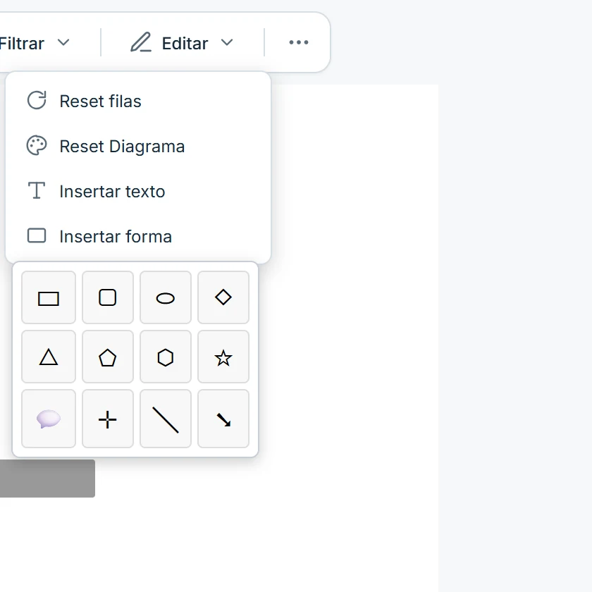
Figura 44 — Menú Editar y selector de formasInsertar texto y formas.
Qué observar
Reset filas devuelve las barras a su posición automática.
Reset Diagrama restablece los colores al heredado de Categoría 2.
Insertar forma ofrece 12 formas: rectángulo, rectángulo redondeado, óvalo, rombo, triángulo, pentágono, hexágono, estrella, llamada, cruz, línea y flecha.
Formas: se arrastran, se redimensionan con las asas de las esquinas y giran libremente. Pueden llevar texto dentro, que se mantiene horizontal aunque la forma gire.
Panel de forma: relleno, borde y grosor; texto con tamaño, alineación y posición; y valores numéricos de ancho, alto, posición y giro.
Dependencias en la Línea de Tiempo
Active Dependencias en Capas → Contenido. Usa los mismos datos, tipos y colores que el Gantt.
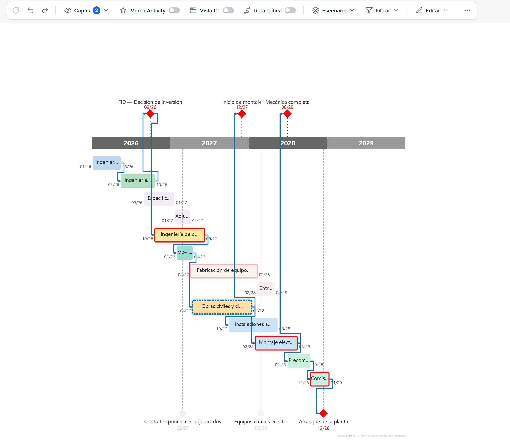
Figura 45 — Dependencias en la Línea de TiempoCadena de dependencias resaltada.
Qué observar
Las flechas unen barras y rombos.
Un clic en una barra resalta su cadena en azul y atenúa el resto.
Se dibujan en la vista base y en el Comparador (en las dos secciones, cada una con sus barras).
No se dibujan en Ejecutivo ni en Vista Hitos; al volver a la vista base reaparecen.
Solo se conectan tareas visibles: las ocultas (Delete, filtros) no tienen flecha.
El resaltado por clic funciona con el interruptor encendido.
Ajustes del área de visualización
El menú Ajustes controla el espacio extra a izquierda, derecha, arriba y abajo, el alto de las barras, el tamaño de los rombos, y el alto y ancho de la fila de años. El formato de fecha (14 formatos, por ejemplo dd/mm/aa o mmm/aaaa) se elige en el selector de la barra inferior. Abajo a la derecha hay una barra de zoom de 25 % a 400 %; pulse el porcentaje para volver a 100 %.
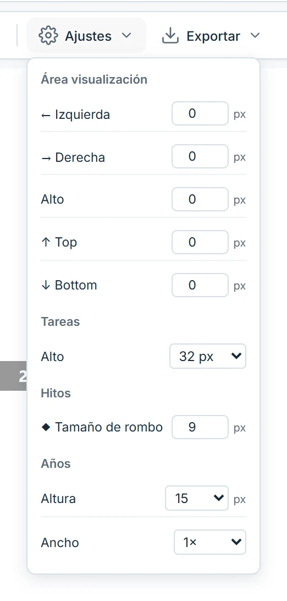
Figura 46 — Ajustes de la Línea de TiempoPanel del menú Ajustes.
Qué observar
Área visualización: espacio extra a izquierda, derecha, arriba y abajo.
Tareas: alto de las barras. Hitos: tamaño del rombo.
Años: altura y ancho de la fila de años.
Capítulo 7 · Analizar
Escenarios
Un escenario es una versión del cronograma. Aprenda a cargar varias versiones, elegir cuáles ver y compararlas en el Gantt y en la Línea de Tiempo.
En este capítulo aprenderás a:
Entender qué es un escenario en Excel y en XML.
Cargar, duplicar y eliminar escenarios.
Elegir qué escenarios se ven y compararlos.
Qué es un escenario
Un escenario es una versión del cronograma que quiere comparar: un plan base y una replanificación, o las variantes P10, P50 y P90 de una simulación. Cada escenario tiene sus propias tareas.
El escenario de una tarea se determina así, en este orden:
La columna Escenario de la tarea, si tiene valor.
Si no, el archivo XML de origen (cada XML cargado cuenta como un escenario, con el nombre de su variante).
Si no, su Categoría 1. Así, un Excel antiguo que usa la Categoría 1 para las versiones sigue funcionando sin cambios.
Escenario y dependencias
El escenario es también el ámbito de los ID de las dependencias: dos escenarios pueden repetir los mismos ID sin mezclarse.
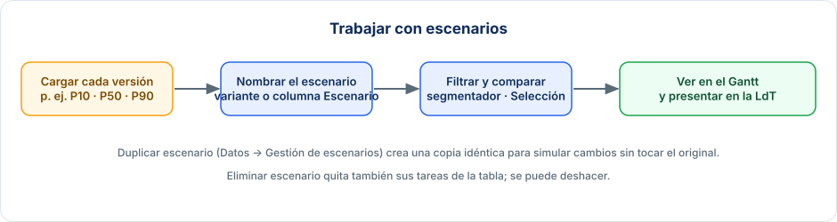
Figura 47 — Trabajar con escenariosDel archivo cargado a la comparación.
Qué observar
Cada variante se carga como una carga distinta.
Duplicar copia el escenario completo; Eliminar quita sus tareas.
Gestión de escenarios
La sección Datos tiene una pestaña Gestión de escenarios con la lista de todos los escenarios de la sesión, vengan de Excel o de XML.
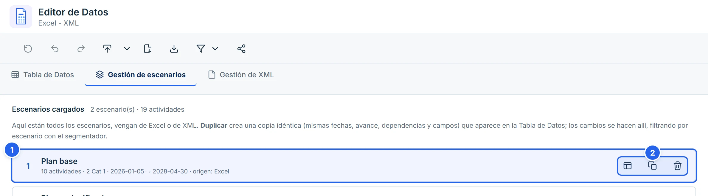
Figura 48 — Gestión de escenariosLista de escenarios de la sesión.
Un escenario: nombre, número de actividades, Categorías 1, rango de fechas y origen (Excel o XML)
Herramientas: Ver en la Tabla de Datos, Duplicar escenario y Eliminar escenario
Qué observar
El resumen indica cuántos escenarios y actividades hay en total.
El origen indica si el escenario viene de un Excel o de un XML.
Ícono
Qué hace
Ver en la Tabla de Datos
Abre la tabla filtrada por ese escenario (con el segmentador).
Duplicar escenario
Crea una copia idéntica (fechas, avance, dependencias y campos) con un nombre nuevo.
Eliminar escenario
Quita el escenario y todas sus actividades, con confirmación.
Pulse Duplicar escenarioLa aplicación propone un nombre («… (copia)»).
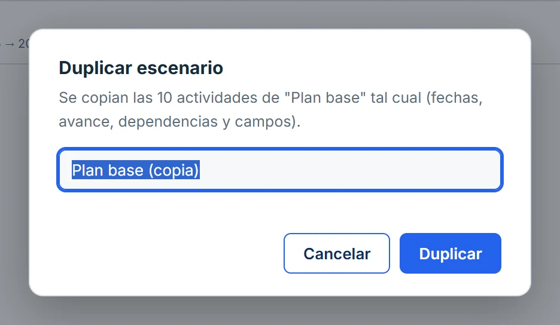
Figura 49 — Duplicar escenarioCuadro de diálogo de la aplicación.
Qué observar
El cuadro indica cuántas actividades se copian.
Valida el nombre en el mismo cuadro: no puede estar vacío ni repetirse.
Escriba el nombre y confirmeLa copia aparece en la Tabla de Datos, con sus predecesoras resueltas dentro de la copia.
Edite la copiaCambie fechas, avance o dependencias en la Tabla de Datos, filtrando por el escenario nuevo con el segmentador.
Ideal para simular
Duplique «Plan base», mueva fechas en la copia y compárelas en el Gantt. Las copias sobreviven a un nuevo «Aplicar mapeo» del XML.
Eliminar borra las tareas
Eliminar un escenario quita todas sus actividades de la tabla. Puede deshacerlo desde la Tabla de Datos con Deshacer.
Cargar varios escenarios
Cargue cada varianteEn Datos → Gestión de XML cargue un XML por variante (o varios a la vez). Con Excel, use una fila por tarea y escenario, con la versión en la columna Escenario.
Nombre la cargaEn la pestaña Base de datos del XML edite el nombre de la variante (por ejemplo «P50»).
Revise el mapeo de cada archivoCada archivo tiene su mapeo independiente. Con Copiar al [n] lleva el mapeo al siguiente.
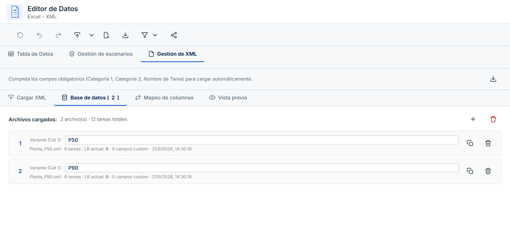
Figura 50 — Dos XML cargados como variantesBase de datos de XML con dos variantes.
Qué observar
Cada archivo es una fila con su nombre de variante editable (P50 y P90 en el ejemplo).
Los íconos de la derecha duplican o eliminan cada carga.
Probar otro mapeo sin releer el archivo
En la Base de datos de XML, el ícono Duplicar escenario copia una carga con su propio mapeo, para probar otra configuración sin volver a leer el archivo (útil con XML muy grandes). El ícono de papelera elimina la carga y sus tareas, con confirmación.
Elegir qué se ve
En el Gantt, abra Filtrar → Selección de tareas. Allí marca qué Categorías 1 (la lista «Escenarios»), qué Categorías 2 y qué tareas se ven. La leyenda de colores y la barra de estado se recalculan con lo que queda visible. Más detalle en Selección de tareas.
«Escenarios» en el panel del Gantt
La lista «Escenarios» del panel de selección del Gantt muestra las Categorías 1, cada una con su color. Para filtrar por el escenario en sentido de esta página (columna Escenario) use el segmentador de la Tabla de Datos o, en la Línea de Tiempo, el menú Escenario.
En la Línea de Tiempo, el menú Escenario filtra por el escenario y edita los títulos de las secciones; su Selección de tareas ofrece las mismas opciones que la del Gantt. En la Tabla de Datos, el segmentador muestra solo las filas de un escenario.
Comparar escenarios
Hay dos formas complementarias de comparar:
Entre escenarios: active varios escenarios a la vez en el Gantt. Cada uno se distingue por el color de su Categoría 1.
Contra la línea base: active Línea base para ver, en cada tarea, la barra planificada junto a la real o proyectada. En la Línea de Tiempo, el modo Comparador muestra ambas secciones.
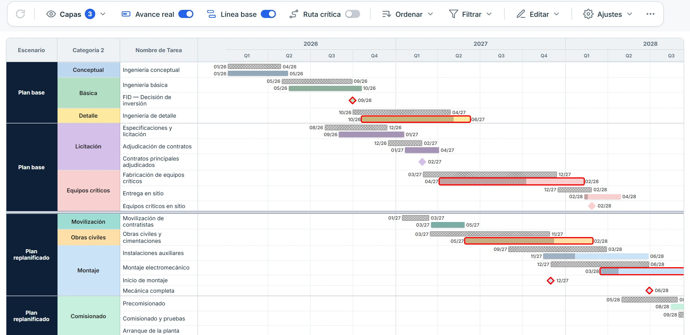
Figura 51 — Dos escenarios en el mismo GanttEjemplo con una copia del plan desplazada 45 días.
Qué observar
La columna Escenario separa «Plan base» y «Plan replanificado».
En el escenario replanificado las mismas tareas empiezan y terminan más tarde.
Cómo interpretar
Compare la posición de una misma tarea en dos escenarios (o en la Línea Base y el proyectado): si el fin se corre a la derecha, la tarea se retrasó; si el inicio se corre, se desplazó. La barra de estado muestra el inicio, el fin y la duración del conjunto visible.
Las herramientas de lectura y control con que cuenta OpenGanttLab: indicadores de la barra de estado, avance, ruta crítica, fecha de estado, dependencias y desplazamientos.
En este capítulo aprenderás a:
Leer los indicadores de la barra de estado.
Usar avance, ruta crítica y fecha de estado para controlar el proyecto.
Detectar problemas de datos y de secuencia con los avisos.
Alcance
OpenGanttLab es una aplicación web de visualización y comparación de cronogramas. No calcula valor ganado ni costos y no incluye tableros de gráficos: analiza fechas, avance, ruta crítica y dependencias.
Indicadores de la barra de estado
La barra inferior resume el conjunto de tareas visible.
Indicador
Qué significa
Tareas
Número de tareas visibles.
Críticas
Cuántas están marcadas en la ruta crítica.
Inicio · Fin
La fecha más temprana y la más tardía (entre Línea Base y Real/Proyectado).
Duración
Días entre el inicio y el fin del conjunto.
Porcentaje
Avance promedio de las tareas visibles.
Las cifras cambian con los filtros, con los escenarios activos y con las capas Marca Activity y Resumen.
Avance
La capa Avance real rellena cada barra según su porcentaje. Los porcentajes vienen de la columna «Avance %» (0–100) del Excel o de «% Completado» del XML. En Configuración puede hacer que los tooltips muestren, además, los días restantes o vencidos de cada tarea.
Ruta crítica
La ruta crítica se lee de los datos (columna «Ruta Crítica» del Excel o campo «Crítica» del XML): OpenGanttLab no la calcula. Las tareas marcadas como críticas se dibujan siempre con borde rojo; la capa Ruta crítica deja visibles solo esas tareas y sus opciones ajustan el grosor del borde. Con las dependencias activas, las flechas entre dos tareas críticas se dibujan en rojo.
Figura 52 — Capa Ruta crítica activaCon la capa activa, el Gantt deja únicamente las tareas críticas.
Qué observar
Solo se ven las tareas marcadas como críticas en los datos.
Las críticas se dibujan con borde rojo con o sin la capa.
Fecha de estado
La capa Fecha de estado dibuja una línea vertical en la fecha de corte. Todo lo que queda a su izquierda ya debería haber ocurrido; compárelo con el avance. Se configura en Capas (estilo, grosor y color); la Línea de Tiempo usa la misma fecha.
Figura 53 — Capa Fecha de estado y sus opcionesLa capa activa y su panel de opciones, abierto desde Capas.
Qué observar
Línea vertical roja en la fecha de corte, con la fecha en la parte superior.
El panel lateral de la capa ajusta la fecha, el estilo, el grosor y el color.
Desplazamientos entre Línea Base y proyectado
Con Línea base activa, la diferencia de posición entre la barra rayada y la de color es el desplazamiento. Si necesita ver las fechas exactas, active Fechas, o agregue al Gantt las columnas «Start LB», «End LB», «Start R/P» y «End R/P» con un clic derecho en un encabezado.
Figura 54 — Desplazamientos con las fechas exactasBarras y fechas juntas permiten medir cuánto se corrió cada tarea.
Qué observar
La barra rayada es la Línea Base; la de color, lo Real/Proyectado.
A la izquierda, las columnas Start LB, End LB, Start R/P y End R/P.
Calidad de la secuencia
El ícono de aviso de dependencias señala problemas que afectan la lectura del cronograma: predecesoras inexistentes, ciclos y textos con formato inválido. Opcionalmente, también los conflictos de fechas. Revíselos antes de presentar un cronograma.
Mover fechas en bloque
Para simular un desplazamiento de un grupo de tareas, use Editar → Mover en bloque. Guarde una copia antes de usarlo: no se puede deshacer. Se explica en Funciones avanzadas.
Capítulo 9 · Analizar
Filtros y orden
Decida qué tareas ver y en qué orden: filtros por columna, selección de tareas y orden cronológico u original.
En este capítulo aprenderás a:
Filtrar por columna, con búsqueda y condiciones.
Seleccionar escenarios, Categoría 1 y Categoría 2.
Cambiar el orden de las tareas.
Filtros por columna
Active los filtrosAbra el menú Filtrar y elija Activar/desactivar filtros por columna. Aparece un botón de embudo en cada encabezado.
Abra el filtro de una columnaPulse el embudo del encabezado. Se abre un panel con la lista de valores.
Figura 55 — Filtro de una columnaEjemplo con la columna Categoría 2.
Qué observar
Caja de búsqueda para encontrar un valor.
Lista de valores con casillas; «Seleccionar todo» marca o desmarca todos.
«Filtros de texto» abre condiciones (igual a, comienza por, contiene…).
Cancelar y Aceptar.
Marque los valores y acepteEl Gantt muestra solo las tareas que cumplen todos los filtros activos.
Quite los filtrosCon Borrar filtros del mismo menú.
Según el tipo de columna, las condiciones cambian: texto (es igual a, no es igual a, comienza por, termina con, contiene, no contiene), número (igual, mayor, menor, entre…) y fecha (igual, antes de, después de, entre; con filtro por año, mes y día).
Filtros en la Tabla de Datos
La Tabla de Datos tiene su propio icono Filtro con el mismo panel. Los filtros del Gantt y de la tabla son independientes.
Selección de tareas
La Selección de tareas (menú Filtrar) elige qué Categorías 1, Categorías 2 y tareas concretas se ven en el Gantt.
Figura 56 — Selección de escenarios y tareasSeleccione un subconjunto del cronograma.
Qué observar
Escenarios (las Categorías 1), Cat 1 y Cat 2 se eligen en listas desplegables.
Cada tarea tiene una casilla; «Todas» y «Ninguna» marcan o desmarcan todo.
«Mostrando todas (N)» indica cuántas tareas quedan visibles.
Cancelar descarta; Aceptar aplica.
La Línea de Tiempo tiene el mismo panel, con las mismas opciones.
Orden de las tareas
El menú Ordenar define el orden de tareas e hitos dentro de cada Categoría 2:
Figura 57 — Menú OrdenarLas dos opciones de orden.
Qué observar
Cronológico: por fecha de inicio.
Original (Excel, XML): el orden del archivo de origen.
Opción
Efecto
Cronológico
Ordena por fecha de inicio.
Original (Excel, XML)
Respeta el orden del archivo de origen.
Para cambiar el orden de los grupos (Escenario, Categoría 1 y Categoría 2) use Reordenar grupos.
Búsqueda
OpenGanttLab no tiene un buscador global de tareas; la búsqueda se hace dentro de cada filtro de columna (caja «Buscar» del panel) o con el filtro de texto «contiene». Para localizar una tarea, filtre la columna Nombre de Tarea.
Capítulo 10 · Producir
Exportar y compartir
Lleve el resultado fuera de la aplicación: imagen, PDF, PowerPoint, Excel o un archivo HTML autónomo que se abre sin el Excel original.
En este capítulo aprenderás a:
Exportar la Línea de Tiempo a PNG, PDF y PowerPoint.
Guardar los datos en Excel.
Compartir un HTML autónomo con datos y configuración.
Qué formato usar
Quiero…
Use
Dónde
Una imagen para un informe
PNG
Línea de Tiempo → Exportar
Un documento para imprimir
PDF
Línea de Tiempo → Exportar
Una diapositiva
PPTX (PowerPoint)
Línea de Tiempo → Exportar
Llevar la tabla a Excel
Descargar .xlsx o Guardar cambios
Datos
Devolver los cambios a Project
Guardar cambios en un XML de Project
Datos › Gestión de XML › Base de datos
Enviar todo a otra persona
Compartir
Barra de herramientas
Exportar la Línea de Tiempo
Deje la vista como la quiereElija el modo de vista, los colores y los textos.
Abra ExportarPulse Exportar en la barra de la Línea de Tiempo.
Figura 58 — Menú Exportar de la Línea de TiempoLos tres formatos de exportación.
Qué observar
PNG: imagen de alta resolución.
PDF: abre una página de impresión con el tamaño exacto del diagrama.
PPTX: una diapositiva de PowerPoint (requiere internet la primera vez).
Elija el formatoEl archivo se descarga o se abre para imprimir.
Qué incluye la exportación
PNG y PDF incluyen las flechas de dependencias si el interruptor está activo, pero no el resaltado temporal de una cadena seleccionada. PPTX no incluye flechas: exporta barras, hitos, líneas y textos.
La exportación a imagen, PDF y PowerPoint está en la Línea de Tiempo. Para llevar el Gantt a otro documento, compártalo (ver más abajo) o capture la pantalla.
Excel
Descargar .xlsx genera un Excel con todas las tareas, incluidas las columnas de Predecesoras y Sucesoras.
Guardar cambios en el Excel vinculado escribe la tabla en el mismo archivo (Chrome o Edge).
Desde la Gestión de XML, el ícono Exportar a Excel descarga toda la base como un archivo .csv (que Excel abre), con las líneas base 0–10.
XML de Project
Desde la Gestión de XML puede crear un XML nuevo con los cambios de la Tabla de Datos (nombres, avance, fechas, predecesoras y campos personalizados) para abrirlo en Microsoft Project. El original no se modifica. Se explica, con sus límites, en Devolver los cambios a Project (XML).
Compartir
Compartir genera un único archivo HTML —una copia de la aplicación con sus datos embebidos— que se abre en cualquier navegador sin el Excel ni el XML originales. Se guarda por defecto como OpenGanttLab_compartir.html.
Prepare el resultadoDeje el Gantt y la Línea de Tiempo como quiere que se vean.
Pulse CompartirEn Chrome o Edge se abre el selector de carpeta; en otros navegadores el archivo se descarga.
Envíe el archivoQuien lo reciba lo abre y ve sus datos y la mayor parte de su configuración; hay excepciones en el Gantt (ver más abajo).
Figura 59 — Qué viaja en el archivo compartidoLo que conserva el archivo y lo que hay que volver a configurar en el Gantt.
Qué conserva el archivo compartido
Las tareas y sus fechas, avance, marca de ruta crítica, ID y predecesoras, y los escenarios (Categorías 1) activos con sus colores.
En el Gantt: las capas Línea base, Dependencias, Fechas y Resumen; la escala, la fuente y los tamaños; el orden de los grupos y de las tareas; y los textos libres.
En la Línea de Tiempo: las capas y modos activos (Comparador, Segmentación, Ejecutivo, Vista C1, Vista Hitos, Marca Activity, Resumen, Leyenda, Fecha de estado, Ruta crítica y Dependencias), las tareas ocultas, los colores, textos y formas editados, los títulos, el orden de las bandas y el formato de fecha.
Lo que no viaja
En el Gantt no se guardan las capas Avance real, Marca Activity, Fecha de estado y Ruta crítica, las columnas que agregó con clic derecho ni los filtros por columna: al abrir el archivo compartido hay que volver a configurarlos. Tampoco viajan las preferencias de Configuración (por ejemplo el aviso de conflictos de fechas) son del navegador de cada persona, y las columnas de mapeo personalizadas de XML duran solo la sesión.
Cambios sin compartir
El botón Compartir se resalta cuando hay cambios sin guardar. En Configuración puede activar un recordatorio cada N minutos.
Capítulo 11 · Producir
Funciones avanzadas
Herramientas para ajustar el diagrama a la medida: mover fechas en bloque, reordenar grupos, texto libre, columnas personalizadas y más.
En este capítulo aprenderás a:
Mover las fechas de un grupo de tareas en bloque.
Reordenar escenarios, Categoría 1 y Categoría 2.
Insertar texto libre en el Gantt.
Usar columnas personalizadas y ajustes de fuente.
El menú Editar del Gantt
Figura 60 — Menú Editar del GanttLas tres herramientas de edición del Gantt.
Qué observar
Insertar texto: nota libre sobre el diagrama.
Mover en bloque: desplaza fechas de un grupo.
Reordenar grupos: cambia el orden visual.
Mover en bloque
Desplaza por un número de días las fechas de todas las tareas de un grupo. Es útil para simular un retraso o un adelanto de una fase completa.
Abra la herramientaEditar → Mover en bloque.
Figura 61 — Mover en bloqueCuadro de diálogo de la herramienta.
Qué observar
Agrupar por: Escenario, Categoría 1 o Categoría 2.
Valor: el grupo concreto.
Fechas: Línea Base, Real/Proyectado o ambas.
Desplazar: días (un número negativo adelanta).
Elija el grupo y las fechasSeleccione «Agrupar por», el valor y qué fechas mover (LB, R/P o ambas).
Indique los días y apliqueUn número negativo mueve hacia atrás.
Modifica los datos
Mover en bloque cambia las fechas de las tareas y no se puede deshacer con el botón Deshacer. Guarde una copia antes de usarlo (por ejemplo con Compartir o Descargar .xlsx). Si cargó un XML, Restaurar en la Tabla de Datos vuelve a los datos originales.
Reordenar grupos
Cambia el orden visual de los grupos con las flechas ▲▼: primero los Escenarios o Categoría 1 y, dentro de cada uno, sus Categoría 2.
Figura 62 — Reordenar gruposOrden de los grupos del Gantt.
Qué observar
Cada grupo tiene un número de posición y flechas para subir o bajar.
Las Categoría 2 se mueven dentro de su Categoría 1.
Texto libre en el Gantt
Editar → Insertar texto agrega una nota sobre el diagrama. Se arrastra y se puede redimensionar; permite elegir tamaño, color, fondo, borde, alineación y estilo.
Fuente y tamaños
El menú Ajustes cambia la familia de fuente (Segoe UI, Arial, Calibri, Times New Roman, Georgia, Verdana, Courier New o Tahoma) y el tamaño por elemento: fechas, meses, años, Categoría 1, Categoría 2 y nombre de tarea. Se aplica al Gantt y a la Línea de Tiempo.
Figura 63 — Ajustes del Gantt: fuente y tamañosPanel del menú Ajustes del Gantt.
Qué observar
Familia de fuente.
Tamaño en px de fechas, meses, años, Categoría 1, Categoría 2 y Nombre de Tarea.
Columnas personalizadas
En la Gestión de XML, el botón + del mapeo crea una columna extra a partir de cualquier campo del XML. Aparece al final de la Tabla de Datos y, con clic derecho en un encabezado, en el Gantt. Si todo su contenido son fechas, la columna es de tipo fecha (calendario y filtro por año, mes y día).
Figura 64 — Mapeo personalizadoUn campo extra agregado al mapeo de un XML.
Mapeo personalizado creado con «+»: nombre editable («Responsable» en el ejemplo) y su columna de origen
Colores y paletas
El selector de color incluye filas «Estándar» y «Recientes» (paleta de Office). Los colores por defecto de Categoría 1, Categoría 2 y Escenario se definen en Configuración.
Selección múltiple en la Línea de Tiempo
Con Ctrl o Shift + clic agrega barras a la selección. Un doble clic abre el panel y los cambios (color, texto, fechas, trama, ocultar) se aplican a todas; arrastrar una mueve el grupo conservando el desplazamiento relativo entre filas.
Ubicación de un hito en la Vista C1
En el panel de edición de un hito, la opción Ubicación permite colocarlo dentro de una banda de Categoría 1 (con un selector de banda). Requiere la Vista C1 activa y no funciona en Ejecutivo ni en Vista Hitos. Por defecto, el hito sigue sobre el eje.
Figura 65 — Ubicación de un hitoPanel de edición de un hito en Vista C1.
Qué observar
Sección «Ubicación» del panel de edición de un hito.
Requiere la Vista C1 activa; no funciona en Ejecutivo ni en Vista Hitos.
Capítulo 12 · Consultar
Casos de uso
Tres situaciones típicas resueltas de principio a fin. Todas usan el proyecto de ejemplo del manual (una planta industrial ficticia).
En este capítulo aprenderás a:
Comparar la Línea Base con el cronograma proyectado.
Preparar la lámina de un comité.
Revisar la secuencia de un XML de Project.
Figura 66 — Los tres casos de usoCada caso parte de datos ya cargados o por cargar, sigue unos pasos y termina en un resultado concreto.
Caso 1 · ¿Cuánto se desplazó el proyecto?
Situación: el equipo replanificó y el gerente pregunta qué tareas se corrieron respecto al plan original.
Cargue los datosCargue el Excel o el XML con las fechas LB y R/P (Proyectos y datos).
Active Línea base y Avance realEn Capas o con los accesos rápidos de la barra.
Lea los desplazamientosCompare la barra rayada con la de color; agregue las columnas «Start LB», «End LB», «Start R/P» y «End R/P» con clic derecho si necesita las fechas exactas.
Identifique lo críticoActive Ruta crítica para ver solo las tareas marcadas como críticas en los datos del cronograma.
Resultado
Una vista única con lo planificado, lo proyectado y el avance de cada tarea, donde se ve de inmediato qué se desplazó y cuánto. Vea un ejemplo en Desplazamientos entre Línea Base y proyectado.
Caso 2 · Una lámina para el comité
Situación: hay que presentar el cronograma a un comité en una sola lámina, con foco en los hitos.
Abra la Línea de TiempoElija el modo de vista: Vista C1 para agrupar por disciplina, o Ejecutivo para mostrar solo entregas.
Depure lo que se veOculte con Delete las tareas que no aporten, o use Selección de tareas.
Ajuste la presentaciónEdite colores y textos con doble clic; agregue una llamada o una forma desde Editar. Active Leyenda si hace falta.
ExporteExportar → PowerPoint, o PNG para pegarlo en un informe.
Figura 67 — Lámina para el comitéLínea de Tiempo con Vista C1, Leyenda y Fecha de estado.
Qué observar
Vista C1: una banda por Categoría 1.
Leyenda de colores de Categoría 2 en el diagrama.
Línea roja de la fecha de estado.
Guarde su trabajo
Use Compartir para conservar la configuración de la lámina. Al abrir el archivo compartido verá exactamente lo mismo.
Caso 3 · Revisar la secuencia de un XML de Project
Situación: llega un XML de Project de varios cientos de megabytes y hay que revisar si la lógica está bien enlazada.
CárgueloEn Datos → Gestión de XML. La lectura por partes evita que el navegador se bloquee.
Complete el mapeoConfirme Categoría 1, Categoría 2, Nombre de Tarea y las fechas. Compruebe con la vista previa.
Active las dependenciasEn el Gantt: Capas → Dependencias.
Revise los avisosEl ícono de triángulo lista predecesoras inexistentes y ciclos. Active el aviso de conflictos de fechas en Configuración si quiere comparar también las fechas.
Siga una cadenaHaga clic en un hito importante para resaltar todo lo que lo precede.
Figura 68 — Secuencia de un XML revisada en el GanttGantt de un XML cargado, con Dependencias activas y un aviso.
Qué observar
Las flechas muestran la secuencia de las tareas del XML.
El ícono de triángulo con el número indica los avisos pendientes (aquí, una predecesora inexistente).
Tiempo de lectura
Los XML grandes se leen por partes y pueden tardar según su tamaño y el equipo. Una barra muestra el avance durante la carga.
Capítulo 13 · Consultar
Referencia y glosario
Consulta rápida: atajos, campos, formatos, estados y terminología.
Atajos y gestos
Atajo
Acción
Dónde
Ctrl+Z
Deshacer
Línea de Tiempo
Ctrl+Y
Rehacer
Línea de Tiempo
Delete
Oculta el elemento seleccionado
Línea de Tiempo
Ctrl / Shift + clic
Agrega barras a la selección
Línea de Tiempo
Doble clic
Abre el panel de edición
Línea de Tiempo
Clic en una barra
Resalta su cadena de dependencias
Gantt y Línea de Tiempo
Clic derecho en un encabezado
Mostrar / ocultar columnas
Gantt
Arrastrar el borde del encabezado
Cambia el ancho de una columna
Gantt y Tabla de Datos
Esc
Cierra primero el panel lateral y después el menú abierto
Barras de herramientas
Campos de la Tabla de Datos
Campo
Tipo
Descripción
Escenario
Texto
La versión del cronograma; también ámbito de los ID de dependencias.
Categoría 1
Texto
Agrupación mayor de las tareas.
Categoría 2
Texto
Fase o agrupación.
Nombre de Tarea
Texto
Nombre visible.
Start LB · End LB
Fecha
Inicio y fin de la Línea Base.
Avance Real
Número 0–100
Porcentaje de avance.
Start R/P · End R/P
Fecha
Inicio y fin Real/Proyectado.
Duración (d)
Número (días)
Días corridos: fin − inicio + 1 de Real/Proyectado; hitos y eventos, 0.
Clase
TAREA · HITO · EVENTO
Tipo de elemento.
Ruta Crítica
si · no
Marca de ruta crítica.
Marca Activity
Texto
«Si» para las tareas marcadas.
Resumen
si · no
Tarea resumen.
ID
Texto
Identificador para las dependencias.
Predecesoras
Texto
Dependencias en el formato de Project.
Sucesoras
Calculado
Inversa de las predecesoras (no se edita).
Formato de Predecesoras
Estructura
ID[tipo][+/−desfase], separadas por «;» o «,»
Tipos (español)
FC, CC, FF, CF
Tipos (inglés)
FS, SS, FF, SF
Unidades de desfase
d / día(s) · w / sem · h / hora(s) · min · mes; «e» delante = transcurrido (ed, eh)
Ejemplos
12 · 12CC+2 días · 7FF-1d · 12;15FC+3d
Desfases en porcentaje
Los desfases en porcentaje que vienen de un XML no se convierten (se leen como 0). Al escribirlos a mano (12FC+50%) sí se conservan.
Colores y símbolos
Figura 69 — Símbolos del GanttLos elementos gráficos que se repiten en el Gantt.
Barra de Línea Base (rayada)
Barra Real/Proyectado (color de la Categoría 2)
Avance (parte más oscura de la barra)
Tarea crítica (borde rojo)
Hito (rombo)
Dependencia (flecha)
Elemento
Significado
Barra rayada gris
Línea Base.
Barra de color
Real/Proyectado (color de su Categoría 2).
Parte más oscura de la barra
Avance.
Borde rojo
Tarea o hito de la ruta crítica.
Rombo
Hito.
Triángulo ▼
Evento (Línea de Tiempo, sobre el eje).
Flecha gris
Dependencia normal.
Flecha roja
Dependencia entre dos tareas críticas.
Flecha azul
Cadena de la tarea seleccionada.
Flecha naranja discontinua
Conflicto de fechas (solo si activó ese aviso opcional en Configuración).
Línea vertical
Fecha de estado.
Formatos de fecha
El selector de la barra inferior ofrece 14 formatos: dd/mm · mm/aa · mm/aaaa · dd/mm/aa · dd/mm/aaaa · dd/mmm/aaaa · mmm/aaaa · mmm/aa · mmm-aa · dd-mm · mm-aa · mm-aaaa · dd-mm-aaaa · dd-mmm-aaaa.
Archivos y formatos
Formato
Uso
.xlsx
Entrada y salida de datos.
.xml (Project)
Entrada (se lee por partes) y salida: «Guardar cambios en un XML de Project» crea un archivo nuevo.
.csv
Salida de la base de XML (con líneas base 0–10).
.png · .pdf · .pptx
Salida de la Línea de Tiempo.
.html
«Compartir»: copia autónoma de la aplicación con los datos.
Glosario
Autoguardado
Guardado silencioso cada 5 minutos en el Excel vinculado o en el archivo elegido con «Compartir», si ya se concedió permiso.
Avance
Porcentaje completado de una tarea (0–100).
Capa
Elemento que se puede mostrar u ocultar sobre el cronograma (avance, línea base, dependencias…).
Categoría 1 / Categoría 2
Niveles de agrupación de las tareas, con color propio.
Cronograma
Conjunto de tareas e hitos con sus fechas.
Dependencia
Relación entre una tarea predecesora y una sucesora.
Desfase (lag)
Retraso (+) o adelanto (−) de un vínculo de dependencia.
Duración
En la barra de estado, los días entre el inicio y el fin del conjunto visible.
Escenario
Una versión del cronograma que se compara con otras. Se toma de la columna Escenario, del archivo XML de origen o de la Categoría 1 (en ese orden).
Evento
Marcador (▼) que se dibuja sobre el eje de la Línea de Tiempo.
Fecha de estado
Fecha de corte del proyecto, dibujada como línea vertical.
Hito
Tarea sin duración, representada por un rombo.
LB actual
La línea base de Project (0–10) que se usa: la de fecha de guardado más reciente.
Línea Base (LB)
Fechas planificadas originalmente.
Marca Activity
Campo «Si/No» para marcar tareas de interés y mostrar solo esas.
Programación manual
Modo de Project en que una tarea conserva las fechas que tiene, sin recalcularlas. OpenGanttLab lo usa al devolver fechas a un XML.
Mapeo
Correspondencia entre los campos de un XML y las columnas de la tabla.
Predecesora / Sucesora
La tarea que condiciona / la tarea condicionada en una dependencia.
Reprogramación de sucesoras
Recalcular las fechas de las sucesoras cuando se edita una tarea en la Tabla de Datos, como Project con programación automática (días corridos).
Real/Proyectado (R/P)
Fechas reales, o proyectadas si la tarea no ha terminado.
Resumen
Tarea que agrupa a otras; se muestra con la capa «Resumen».
Segmentador
Selector de la Tabla de Datos que muestra solo las filas de un escenario.
Ruta crítica
Tareas que condicionan la fecha final; se leen de los datos, no se calculan.
Variante
Nombre de una carga de XML; es el escenario.
Términos que no existen aquí
OpenGanttLab no maneja recursos, costos ni valor ganado, por lo que términos como ETC o EAC no aplican.
Capítulo 14 · Consultar
Solución de problemas
Síntomas frecuentes, su causa probable y cómo resolverlos.
Importación
Faltan tareas después de cargar el Excel
Una fila se omite si le falta el Nombre de Tarea, la Categoría 1 o alguna de las fechas de Línea Base. Complete esas columnas y vuelva a cargar. Compruebe también que la primera fila con encabezados esté entre las ocho primeras filas de la hoja.
«No es un .xlsx válido»
El lector solo admite el formato .xlsx. Si el archivo es un .xls antiguo, ábralo en Excel y guárdelo como .xlsx antes de cargarlo.
Las fechas salen mal o no salen
Verifique que las columnas de fecha del Excel sean fechas reales y no texto. Puede cambiar el formato de visualización en el selector de la barra inferior.
El XML es enorme y tarda
Los XML grandes se leen por partes y pueden tardar según su tamaño y el equipo. Una barra muestra el avance durante la carga. No cierre la pestaña mientras carga.
El XML no pasa a la tabla
Los campos Categoría 1, Categoría 2 y Nombre de Tarea del mapeo son obligatorios. Mientras alguno esté vacío, verá el mensaje «Completa los campos obligatorios…» y los datos no se cargan. Asigne una columna o un «Valor fijo» a cada uno.
Figura 70 — Mapeo con campos obligatorios pendientesMientras falte alguno, los datos no pasan a la Tabla de Datos.
Qué observar
El mensaje superior indica qué campos faltan: Categoría 1, Categoría 2 y Nombre de Tarea.
Los campos obligatorios llevan asterisco y su etiqueta en rojo.
«No parece un XML de Microsoft Project»
El archivo no contiene la sección de tareas de Project. Exporte de nuevo desde Project como XML.
No puedo guardar los cambios en un XML de Project
Use Chrome o Edge: la función necesita la API de acceso a archivos.
Elija el XML original del mismo proyecto; si el nombre no coincide, la aplicación lo avisa porque los UID podrían no coincidir.
El XML original debe estar en UTF-8; con otra codificación no se puede reescribir sin alterar los caracteres.
Si el resumen dice «No devuelto», revise el motivo indicado (por ejemplo, una tarea sin elementos de programación manual o una predecesora con un ID que no existe).
Visualización
El Gantt aparece vacío
Aún no hay datos cargados. Vaya a Datos y use Cargar archivo. Si hay datos, revise que haya Categorías 1 marcadas en Filtrar → Selección de tareas y que no haya filtros activos (Filtrar → Borrar filtros).
Figura 71 — Gantt sin datosCon el Gantt vacío, un clic sobre el área abre el menú de carga.
Qué observar
Un clic sobre el área vacía abre el menú para cargar datos.
«Vincular Excel (.xlsx)» y «Importar Project XML» son las dos opciones.
No veo la Línea Base
Active la capa Línea base (Gantt) o Comparador (Línea de Tiempo) y compruebe que Start LB y End LB tengan fechas.
Faltan tareas en el Gantt
Revise los filtros por columna, la selección de tareas y que Resumen esté activo si busca tareas resumen. Con Marca Activity activo solo se ven las marcadas. En la Línea de Tiempo, mire Tareas ocultas (N).
No veo flechas de dependencias
Active Dependencias en Capas.
Confirme que las tareas tengan ID y Predecesoras (columnas del Gantt con clic derecho). En XML, revise que el mapeo de «ID (Project)» y «Predecesoras» esté asignado.
En la Línea de Tiempo, las flechas no se dibujan en Ejecutivo ni en Vista Hitos.
Solo se dibujan entre tareas visibles.
Aparece el ícono de aviso junto a las capas
Es un aviso de calidad de datos, no un error. Haga clic en él para ver las predecesoras inexistentes, los ciclos o, si lo activó, los conflictos de fechas, y corríjalos en la columna Predecesoras de la Tabla de Datos.
Guardar y exportar
No puedo guardar en el Excel
Use Chrome o Edge y vincule el archivo desde Datos. Como alternativa, use Descargar .xlsx.
La exportación a PowerPoint no se genera
La primera vez necesita conexión a internet para descargar el componente de exportación.
Perdí mis cambios de la Línea de Tiempo
Use Compartir para guardar una copia completa. Las tareas ocultas de Ejecutivo y el formato de fecha también se recuerdan por proyecto en el navegador. Las preferencias de Configuración son propias de cada navegador.
Aviso de «cambios sin compartir»
La aplicación no guarda por sí sola si no hay un destino vinculado. Pulse Compartir (o guarde en el Excel vinculado) para conservar el trabajo.
Datos inconsistentes
Síntoma
Causa probable
Qué hacer
Un hito aparece como barra
La columna «Clase» no dice «Hito» y las fechas de LB no son iguales.
Escriba «Hito» en Clase.
Avance de 0,76 en vez de 76
Excel guarda los porcentajes como fracción.
Se convierte solo: 0–1 se interpreta como porcentaje. Si ve 0,76 %, revise que el valor no sea < 1 por error.
Dos tareas con el mismo nombre en una fila
Tareas partidas con el mismo nombre.
Es lo esperado: se dibujan en la misma fila, en distintas posiciones.
Predecesora que «no existe»
El ID no está en el mismo Escenario.
Revise la columna Escenario (o la Categoría 1) y el ID.
Cambié una fecha y se movieron otras tareas
La reprogramación de sucesoras está activa: mueve las sucesoras de la fila editada.
Desactive Reprogramar sucesoras en la barra de la Tabla de Datos, o use Deshacer (un solo paso).
Datos distintos tras «Actualizar»
El Excel cambió desde la última carga.
Es lo esperado: «Actualizar» recarga el Excel vinculado.
Navegador
OpenGanttLab está optimizado para Chrome y Edge 86 o superior. En otros navegadores puede funcionar, pero algunas funciones (guardar directamente en el Excel, elegir carpeta al compartir) usan una API que no todos incluyen.
¿Sigue el problema?
Escriba a oscar.jaramillo@outlook.com o por WhatsApp al +57 313 783 3032, con una descripción breve y, si es posible, una captura de pantalla.